Unit 1 Introduction How do you perceive the world around you? Do you believe people are inherently good and care about their fellow human beings or that most people have a darker,...
Big ideaTo what extent should ideology be the foundation of identity?
Unit overview
Learn / Read
Unit 1 Introduction
How do you perceive the world around you?
Do you believe people are inherently good and care about their fellow human beings or that most people have a darker, selfish side that is kept in check only by rules and laws?
Do you think people should be responsible for their own well-being or should society take responsibility for the care of the individuals that make it up?
Where do you fit in? What is your role as an individual within society?
Why do you believe what you do?
How much have your beliefs been shaped by those of others and to what extent do they guide your interactions with other members of society?
These questions all touch upon who you believe you are, what you value in life and your attitudes toward the society you live in. In short, they are questions of identity and ideology.
In this unit you will begin to explore these questions in greater detail. Ultimately, you will finish the unit with a better sense of the relationship between your own identity and ideology. As well, you will have acquired an understanding of the various degrees to which ideology can impact individual and group identity. You will be well prepared to answer the unit question, “To what extent should ideology be the foundation of identity?” and you will have taken an important step on the road to determining the extent to which we should embrace an ideology, the fundamental issue of this course.
Watch / Listen
Podcast connection
Use this podcast before the lesson questions. Listen for details that help answer the related issue question: To what extent should ideology be the foundation of identity?
Identity & Ideology Podcast
Podcast companion for connecting personal identity, beliefs, values, and ideology to the first related issue.
Unit 1 Section 1 Introduction It was 2:00 p.m., September 11, 2001. Jared was sitting with his friends and classmates glued to the television.
Big ideaTo what extent should ideology be the foundation of identity?
Section 1: Identity, Beliefs, and Values
Learn / Read
Unit 1 Section 1 Introduction
It was 2:00 p.m., September 11, 2001. Jared was sitting with his friends and classmates glued to the television. Like millions of people around the world, they were watching endless replays of the horrific events that had unfolded that day.
Someone had the remote and was flipping through the channels. They stopped on one channel. This network was airing footage of dust covered New York City firefighters returning to their station. As small groups of firefighters arrived back at the firehall, they hugged each other, tears streaming down their faces as it became more and more apparent than many of their colleagues had not made it back to the hall and never would.
The footage was gripping and it was obvious to Jared that many people in the room around him were emotionally affected by what they were watching, especially his friend Michelle. Tears welling up in her eyes, Michelle turned to him and said, “I don’t understand? Why did they attack us? Why do they hate us?"
Jared was at a loss for words. Why would anyone fly airplanes full of innocent men, women and children into office towers filled with people going about their daily business? Thousands had been killed, including of course, the hijackers themselves. All Jared could do was put his arm around Michelle and mumble an admission of his own bewilderment.
“I don’t know,” he said quietly. “I just don’t know.”
Over the next few days Jared continued to spend a lot of time in front of the television. As he watched the images of firefighters and construction workers digging through the rubble of the World Trade Center and the Pentagon, Michelle’s questions gnawed at him.
“Why did they attack us? Why do they hate us?”
It occurred to Jared that, in some ways, it was an odd question. He and Michelle were Albertans living thousands of kilometers away from the American cities that were attacked. And while the attacks were spectacular and took many lives, he had seen news reports of bombings, wars and natural disasters in other countries over the years. Many were horrific in nature and often more costly in terms of the lives taken, than the attacks just carried out against the United States.
Why was this different? Why did he, and obviously Michelle, feel like this was somehow an attack on them? It was as if... No, he couldn’t explain it. He couldn’t put his finger on why he felt the way he did.
The next evening Jared was eating supper. The TV was on but he was not really paying much attention. All that was on was a news anchorwoman who was talking to some “analysts”. As he caught snippets of what they were discussing he realized that they were speculating on the reasons for the attack. Jared listened more intently. The people being interviewed were using terms like “clash of civilizations,” “cultural identity,” and “systems of belief and values.”
Jared didn’t quite get what they were talking about, but it was clear that these analysts were driving at a more complex explanation for the attacks than simply labeling the terrorists as “crazy” or “evil”. Moreover, there was something in what the analysts said that seemed to relate to why he and many of the people he knew felt the 9/11 attacks so personally.
He resolved to look into this a little more. He’d seen Michelle the other day and frankly, he was a bit worried about her. For whatever reason, the 9/11 attacks appeared to be weighing on her more than any of his other friends. She seemed sad and almost irrationally frightened. Perhaps if he could give her an answer to her question, if he could explain why this happened, she could start coming to terms with what had occurred.
Learn / Read
Voices
Like the characters in the story above, many people outside the United States, and particularly in other Western countries, felt a deep personal connection to America in the days following the tragedy of 9/11. In other parts of the world, there were people who, while mostly condemning the terrorist attacks, explained that they understood why the terrorists did what they did. Perhaps you too, feel some connection to people involved in this event.
The connections people felt arose, at least in part, from a sense of their own identity and their ability to identify with others. You may have felt a similar way after hearing about people suffering through a more recent human-caused or natural disaster.
In this section you will be exploring how identity is developed. It is necessary to understand what identity is and how it is shaped, before you can address the larger unit issue regarding whether ideology should be the foundation of identity.
Unit 1 Section 1 Outcomes
In this section you will develop your understanding of identity by:
exploring factors that may influence individual and collective beliefs and values (culture, language, media, relationship to land, environment, gender, religion, spirituality, ideology)
As well you will continue to develop the following skills and processes:
evaluating personal assumptions and opinions to develop an expanded appreciation of a topic or an issue
respecting the needs and perspectives of others
applying the research process
developing skills of media literacy
Section Glossary
belief - a notion, conviction or impression that an individual or group accepts as true. collective identity - aspects of an individual's identity that are held in common with a larger group. identity - a set of characteristics that connects or sets people apart from others. ideology - a set of beliefs or values, in particular those which form the basic components of a political or economic theory or system. value -a principle, philosophy or code that defines what is important or desirable.
Watch / Listen
Podcast connection
Use this podcast before the lesson questions. Listen for details that help answer the related issue question: To what extent should ideology be the foundation of identity?
Identity & Ideology Podcast
Podcast companion for connecting personal identity, beliefs, values, and ideology to the first related issue.
Exploring Identity Get Focused What is identity? While this may seem like a simple question, the whole notion of identity can be quite complex and it has been the subject of consid...
Big ideaTo what extent should ideology be the foundation of identity?
Section 1: Identity, Beliefs, and Values
Learn / Read
Get Focused
What is identity? While this may seem like a simple question, the whole notion of identity can be quite complex and it has been the subject of considerable study by psychologists, philosophers, and social scientists. Identity encompasses not only an understanding of oneself, but also a perception of one’s place in the world. How someone sees themself is inextricably related to how they see their role in the society.
In this lesson you will be looking to answer the question: What is Identity?
Learn / Read
Explore
While you may not recognize the painting, you have most likely heard of the painter. As a teenager, Adolf Hitler dreamed not of dominating the continent of Europe, but of becoming a great artist. When he was unable to pass the entrance exam for the Vienna Academy of Fine Arts, Hitler’s interest eventually turned to politics.
How might the experience of being rejected by the art school have altered Hitler’s view of himself? How might the world have been different if Hitler had continued to see himself primarily as an artist?
Watch and Listen
Your identity is influenced by many factors. View this multimedia piece to see how:
Problems playing the media? You may need to ask your School's administration about their policy on blocking websites through school computers, like YouTube. They should be able to lift any restrictions for you so that you may benefit from the learning resources provided in this coruse.
In the meantime, if the video does not play in your browser, right click this link: identity, and select "Save Link as" or "Save Target as" and save the .MOV file to your desktop. Then play it directly from your desktop and open in your preferred media player. The free to download VLC Player plays .MOV files.
Journal/Notes
In your journal or notes, complete the following:
In your own words, create a definition for the terms identity and collective identity. Compare your definitions with the ones provided below.
Personal identity: a set of characteristics that connect or set people apart from others. Collective identity : aspects of an individual's identity that are held in common with a larger group.
Read
Read pages 23 to 26 in Perspectives on Ideology. Start at the heading “Understandings of Identity” and end at the bottom of page 26.
You can access the online textbook through the course Content (see top menubar). Scroll down to the textbook section (near the bottom/end) and open to access each Chapter.
Big idea
Lesson Summary
Everyone has a distinct personal identity that has been shaped, and continues to be shaped, by a wide variety of external factors. People also all share things in common with others in society and these similarities provide the foundation for a sense of collective identity.
In the next lesson you will begin to examine beliefs and values. As you proceed through this section you will develop an understanding of the relationship between an individual’s identity and his or her system of beliefs and values.
Going Beyond / Enrichment
As a continued exploration of the notion of identity and how it may shape a person’s interactions with other people and with society, you may want to watch the 1993 Ivan Reitman film Dave. Think about how Dave’s own identity begins to exert itself as he steps in as a double for the President.
What influences made Dave the man he is?
How does he influence those around him?
What beliefs does Dave have that differ from the man he is replacing?
The film is rated PG.
Watch / Listen
Podcast connection
Use this podcast before the lesson questions. Listen for details that help answer the related issue question: To what extent should ideology be the foundation of identity?
Identity & Ideology Podcast
Podcast companion for connecting personal identity, beliefs, values, and ideology to the first related issue.
Exploring Beliefs and Values Get Focused Please complete the survey below. The questions posed are designed to help frame your thinking for this lesson.
Big ideaTo what extent should ideology be the foundation of identity?
Section 1: Identity, Beliefs, and Values
Learn / Read
Get Focused
Please complete the survey below. The questions posed are designed to help frame your thinking for this lesson. Your answers will not be assessed.
Journal/Notes
Please complete the Beliefs and Values Survey by answering the following questions in your notes/journal.
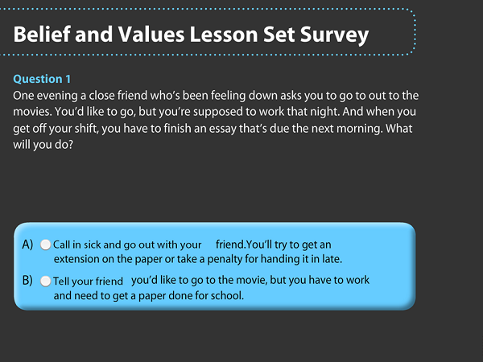
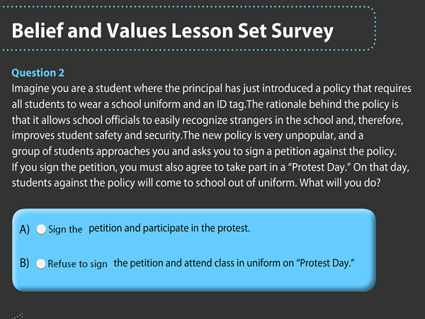
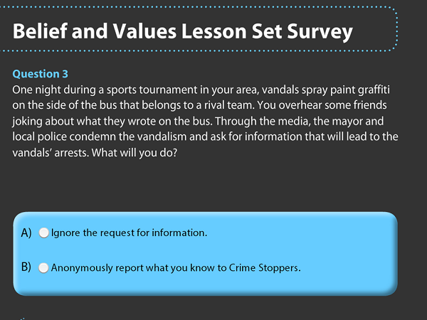
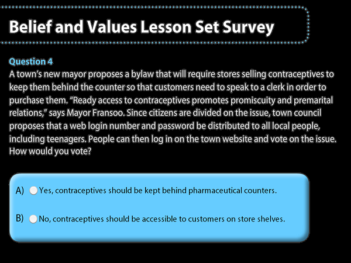
How did you come to your decision for each answer? Which questions were easy to answer? Did some decisions present you with more of an internal conflict than others?
Every day people are presented with decisions that will impact their lives and the lives of others. Some decisions are simple to make, particularly if a person has a strong sense of what is right or appropriate. For example, most people believe murder is wrong and therefore sentencing a mass murderer to prison would not be a difficult decision for most people to support.
Some decisions are more complex, however. Most people value human life. Deciding whether a convicted murderer should receive the death penalty forces a person to consider whether all human life should be valued equally. People are forced to weigh the risk of accidentally executing an innocent person against the sense of retribution and potential deterrence to crime that could come from executing murderers. People must decide whether or not it is right for the state to take a human life. Other difficult and controversial issues place people in conflict over the very definition of human life.
The positions people take and the decisions people make on such issues are often guided by a system of beliefs and values each person has developed. In this lesson you will explore the question: What are beliefs and values?
Learn / Read
Explore
What are Beliefs?
Consider the statements in the cartoons below. Are they true? Are they partially true? Are they true sometimes and not others? Can they be substantiated by fact? If so, how reliable are the facts that might be used to substantiate them?
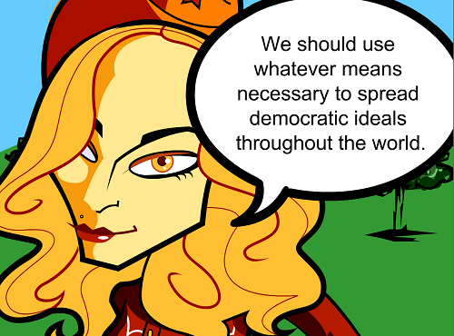
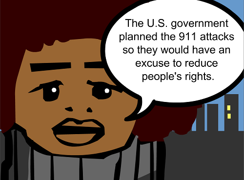
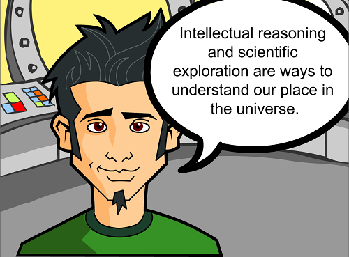
Some individuals would argue some of the statements above are true. Others would disagree vehemently. The statements are perhaps best characterized as statements of belief.
belief: a notion, conviction or impression that an individual or group accepts as true.
Where do beliefs come from? They come from the experiences people have and influences that they encounter as they move through life. Throughout your life you are exposed to countless ideas – religious, scientific, political, and cultural. Some of these ideas you accept while others you may reject. Those ideas you accept eventually form a set of beliefs and values that you use to help you interpret the world around you and your place in it.
One of the challenges that you will constantly face as a consumer of information is deciding for yourself what to accept as truth. After all, it is possible to believe things that are not true. Some conspiracy theorists believe that the Apollo moon landings were faked by the U.S. government and that the television signals showing astronauts walking on the moon were actually beamed from a secret movie set somewhere in the United States.
These conspiracy theorists often support their claims by noting perceived inconsistencies in moon landing photos and by providing quasi-scientific reasons why a manned space flight to the moon would be impossible. Taken on their own, the arguments laid out in support of conspiracy theorists' beliefs can seem quite convincing (if you ignore the logical fallacies).
However, a little research reveals that a wide variety of reputable individuals have systematically refuted each argument provided by conspiracy theorists. There is an overwhelming amount of evidence that has been drawn from many independent sources which proves the moon landings did occur. It is this wealth of evidence that confirms the manned moon landings as “truth” and not, as conspiracy theorists might argue, ‘manufactured belief’. As you move through this course, and indeed through life, it is important that you think critically about the information presented to you. Make it a practice to get as much factual data as you can and carefully weigh the validity of all of the arguments for and against before accepting something as truth or rejecting it as a falsehood.
Critical Thinking Exercise
Can you think of some other notions, beliefs, or perhaps “internet myths” that could easily be discounted if people took more time to examine the facts and engage in critical thinking?
Do you believe arguments that are based on logical fallacies?
Combine these terms in an internet search "logical fallacies" and "global warming" (or "climate change")
Or try "logical fallacies" and "911"
Or "logical fallacies" and "vaccines"
Or "logical fallacies" and any issue or politician for which you want to assess the credibility of arguments made
Skills and Strategies
Still unsure about logical fallacies and why they are not good arguments? Review the Logical Fallacies page in the Student Tools section of Content for a full list of illogical arguments and how to identify such arguments. Aim to never use logical fallacy arguments.
Make logical arguments instead (See Supporting Aguments page - to understand this diploma-level expectation - also in Student Tools section of content).
Learn / Read
What are Values?
a value: a principle, philosophy or code that defines what is important or desirable.
Voices
Consider the statements below:
Speaker #1: “I won’t work overtime because spending time with my kids is more important than money.”
Speaker #2: “I don’t agree with all my daughter’s choices, but ultimately it’s her life and she has to learn to make her own way in the world.”
Speaker # 3 “Cowards die many times before their deaths; The valiant never taste of death but once.” Julius Caesar, Act 2 scene 2, William Shakespeare
Speaker #4: “As far as I’m concerned, you should throw most criminals in prison and throw away the key.
Each of the above statements represents an expression of values.
Journal/Notes
Some would say that Speaker #1 values family. Speaker #2 might be said to value independence. Most would say Speaker # 3 values courage. Some would say that Speaker #4 values law and order. Others would say he or she values justice.
What do you think about Speaker #4’s values? Do they represent desire for law and order? Do they represent a desire for justice? Are law and order and justice the same thing?
Learning Activity
Exploring Beliefs and Values
The purpose of the following activity is to start you thinking about your beliefs and values, those of others, and the factors that may have shaped those beliefs and values.
A series of statements of opinion on controversial topics is provided in the table below. Choose one statement that interests you and think about your opinion on the topic.
Statements of belief/values
Potential Search Terms
“Guns don’t kill people, people kill people. Laws that limit gun ownership unfairly restrict the rights of law–abiding citizens.”
• "gun control" forum
• "gun control" discussion
• "gun control" respond
• "gun control" blog responses
“If a person is suffering a slow and painful death from a terminal illness, there should be an option to give them an overdose of painkillers and end their suffering.”
•euthanasia forum
•"euthanasia blog" respond
•"right to die" forum
“The whole notion of having a separate system for teenage criminals is wrong. If a 14-year-old murders someone, they should automatically receive the same penalty as an adult murderer who killed in the same circumstance.”
• youth crime canada forum
• young offenders forum
Download this activity sheet, provide your opinion and reasoning on the quotation you have chosen. You may agree with the opinion stated in the quotation, reject it, or present an alternative position.
Find three other people (friends, family etc.) whose position on the statement differs from your own. Have a discussion (you may also use the Student Activities discussion forum for this). For each person determine:
a. What is their position? (Is it diametrically opposed to yours or does it represent a modification of your position? Are there some conditions or limitations they have included to qualify their position?) Record their position on the activity sheet as accurately as possible.
b. On the activity sheet, record some of the reasons the other respondents provided to support their position on the issue? Think about what you have written down. Try to determine what has guided their line of thinking. Is it a personal experience, values inherited from their family, religious beliefs or something else?
Do some more thinking. Reflect on the reasons you provided for choosing your own position. Do they represent part of a set of guiding principles related to:
a) how you view human nature (For example, do you believe that strangers are generally good and can be trusted or are all potentially bad and require you to be wary?)
b) how you view human society (For example, what are your views on how people should act in relation to others? Do you think people require a leadership and a lot of structure to get along or can they manage their lives largely independently?)
c) your view of the purpose of human existence? (Do you think as individuals we exist to serve our own needs, to serve the needs of others or the needs of a higher power? Is it some combination of these things and if so, what is most important?)
You may want to take a look at the other quotations provided for the activity. Think about what quotations you would agree with and which ones you would not agree with. When you examine your own opinions on these issues, can you identify a consistent set of beliefs that underlie your opinions?
Re-evaluate your position based on your interaction with others. Has your position on the issue changed as a result of your discussions? If so, what arguments or evidence provided by the others led you to change your mind? If not, explain why you rejected the arguments provided by the other respondents. Record your thoughts in the appropriate space on the activity sheet.
Recall the Getting Started page: Learning Activities are not submitted for marks. These activities are part of the learning process and will enhance your understandings and better prepare you for submitted assignments and the diploma exam.
Going Beyond
In 2005, comedian Stephen Colbert made use of the term “truthiness” on his television show The Colbert Report. Research Colbert’s use of the term and try to determine what aspect of some people’s beliefs Colbert is criticizing.
See also Logical Fallacies page in the Student Tools section of content.
Big idea
Lesson Summary
In this lesson you have learned the specific meanings of the terms belief and values. You have begun to develop an awareness of the factors that can influence a person's beliefs and systems of values. Most importantly, you have embarked on an exploration of the roots of your own beliefs and values and have started to assess your beliefs and values in relation to those of other people.
Watch / Listen
Podcast connection
Use this podcast before the lesson questions. Listen for details that help answer the related issue question: To what extent should ideology be the foundation of identity?
Individualism Podcast
Podcast companion for individualism, self-interest, autonomy, and the way individual rights shape liberal identity.
Factors Influencing Beliefs and Values Get Focused In the previous lesson you examined some beliefs and values and even started to look at some of the reasons people have the beliefs and values they do.
Big ideaTo what extent should ideology be the foundation of identity?
Section 1: Identity, Beliefs, and Values
Learn / Read
Get Focused
In the previous lesson you examined some beliefs and values and even started to look at some of the reasons people have the beliefs and values they do. In this lesson you will delve into this in more depth and start to examine the factors that typically contribute to the development of a individual's system of beliefs.
In this lesson you will explore the question: What factors influence beliefs and values?
Learn / Read
Explore
In the last lesson you discovered that some people have very strong beliefs regarding certain issues. Sometimes a person's beliefs are a result of a particular experience they had as an individual. For example, a person who has been the victim of a violent crime may be more likely to believe that criminals should receive harsh sentences than someone who has never been touched by crime. However, as well as these individual experiences, there are a number of common factors that shape people's beliefs.
Culture
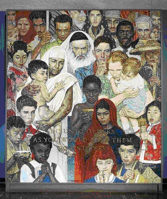
This is a painting by American articst Norman Rockwell which depicts people from a variety of the worlds's cultures and has the words: "Do unto others as you would have them do unto you."
Culture is a broad term that can include, among other things, the values, religious beliefs, language, food, clothing, marriage customs and approaches to child rearing that are shared by a particular people. Can you think of other factors that might be added to this list?
Consider this; how could the environment and way of making a living affect culture? For example, would the people in a maritime fishing community have the same cultural values as a prairie farming community or a large city?
As people have been confronted by different environmental conditions, different economic problems, and different relationships with neighbouring peoples, there evolved a tremendous variety of solutions to deal with these matters. As these solutions were passed from generation to generation, they crystallized into the distinctive varieties of culture that characterize the world's different regions.
Culture is learned and passed on from one generation to the next. Each of us is born into a specific cultural situation, absorbing the values, attitudes, and behavior patterns of our culture. Family, community, school, church, things we read, and television shows we watch help mold you into the person you are.
Language
A language is composed of a set of agreed upon symbols and rules. Language, like other aspects of culture, can be an important factor in shaping and reflecting beliefs and values. Language is often a powerful symbol of identity. Many groups believe that allowing foreign words into their language's vocabulary somehow undermines or even "pollutes" the language. Words are often used to frame a people's most important ideals. Think about the lyrics of national anthems that you know. What ideals are implied in the lyrics? Freedom? Loyalty? Courage?
Language can also help define cultural taboos. Think about words that are considered "swear words". They are often associated with religion or sexuality. Finding out which words are considered most "taboo" in a language can provide a great deal of insight into what ideals are important to a society where swearing is considered anti-social.
Language can even be an indicator of political power. For many French-Canadians, for example, maintaining the supremacy of French over English in Quebec is closely associated with the idea of political autonomy.
Language is more than just spoken or written words. Iconic images or symbols can play an important part in communicating ideas. The swastika is the well-known and reviled symbol of one of history's most brutal political regimes. The swastika, however, is also a very ancient symbol. It appears in artworks created in Asia thousands of years before the birth of Hitler's Nazi regime in Germany. Historically, the swastika was associated not with war, cruelty and genocide, but with good luck. As a boy, Adolf Hitler sang in a church choir. A swastika is inscribed on the wall across from the choir box in the church where Hitler no doubt spent many hours of his youth during choir practice. Some have suggested that this is where he was introduced to the crooked cross that would later become the symbol for the Nazi party. Regardless of the reason he chose it, Hitler's adoption of the swastika radically changed the meaning of the symbol. In the western world, at least, it is recognized by most as a symbol of evil. In some countries wearing or displaying it is a crime.
Understanding the language of symbols is important. Your ability to interpret photographs and political cartoons will rely heavily on your knowledge of commonly used symbols. Can you think of other important and readily recognizable symbols? What icons might a political cartoonist use to symbolize the idea of freedom? Of greed? Of poverty?
Media Today, television, film and print media have become an effective and efficient medium for conveying political statements on a global level. The media is tremendously influential.
For most people, an understanding of world events comes through a journalistic filter. Since there are endless news stories that could be reported, writers, editors, and print and television executives must make choices about what to cover and what to ignore. These decisions are influenced by factors such as what stories will draw readership or viewers and what stories might discourage advertisers from buying time or space from the media organization.
Many people complain that the news is depressing. Media professionals would be likely to respond that that is because disaster, war, and crime stories draw in more readers or viewers than "happy" stories. Some observers would argue, however, that the public is often left with a picture of their world that is darker than actual reality.
Even for those who consume little in the way of formal news, media is no less influential. Television shows, movies and music videos can establish trends for style and social behavior as well as subtly altering people's perceptions of the world around them.
The internet represents history's most revolutionary leap in the delivery of media. As the technology has improved, the power to publish news, opinions, and images or to produce audio and video works is no longer the sole province of newspapers and television networks. Anyone with a computer and internet access can not only access a huge repository of information, but can publish a blog or post a video to YouTube for the world to see. Many observers have referred to this phenomenon as the "democratization of the media".
The integration of cell phone and internet technologies is also making the internet more accessible to people in the developing world. The internet is fast becoming the first truly global medium. The social, political and cultural implications of this level of media access and exposure are compelling.
Journal/Notes
The portrayal of many cultural groups in Hollywood movies has often been criticized as promoting racism and stereotyping. For example, many Arab-Americans point out the absence of positive portrayals of Arabs and Muslims in Hollywood movies. Instead, movies like the 1994 Arnold Schwarzenegger blockbuster True Lies (or The Kingdom (2007), or even Disney's Aladdin), depict Arabs and Muslims as villains or religious and political fanatics or cruel and often bumbling terrorists. Can you think of more recent films that have portrayed Muslims and Arabs in a negative light?
Given the fact that Hollywood films like True Lies are usually shown in theatres across the globe, how do you think they influence Arabs' perception of America? What would your attitude be toward a culture whose film industry continually portrayed your people in a negative light?
Relationship to Land
This is a photo of sign announcing to hikers on Canada's West Coast Trail that hikers are entering the traditional lands of the Ditdaht Tribe:
Whether they recognize it or not, all people rely on the land for their survival. Perhaps most aware of this fact, the world's indigenous peoples have typically developed strong cultural and spiritual associations with the natural world.
Others who also make their living directly from the land or sea, such as farmers and fishermen, also often develop a unique understanding of the relationship between humans and the land that supports them. Rapid industrialization and urbanization has led many societies to deemphasize the notion of human stewardship of the natural world and to view the land primarily as a store of resources to be harvested. In some industrialized societies, this is changing as even urban dwellers are coming to recognize their impact on the natural world.
Land is also frequently associated with the concept of nationalism. The ongoing conflict between Israelis and Palestinians, for example, finds its roots in those peoples' deep cultural and religious connection to the same piece of territory. Both World War I and World War II were a result, at least in part, of the desire of particular national groups to reclaim land they felt was "stolen" from them by an aggressor. The fact that so much blood has been spilled over land highlights the importance of a people's relationship to the land as a factor influencing their beliefs.
Ideology
Whether you consider yourself a politically aware person or not, ideology (a set of beliefs or values, in particular those which form the basic components of a political or economic theory or system) has undoubtedly coloured your perception of the world you live in and helped to shape your beliefs about human nature and society. Ideology has also likely influenced your beliefs about how society should be organized and governed.
Can you name basic freedoms and rights that you think all people should have? What comes to mind? Freedom of speech? Freedom of religion? The right to a fair trial? If you came up with any of these answers without too much trouble, it is likely because you have grown up in, and were schooled in, a democratic nation. Alternatively, your family may have come to Canada because your parents shared the democratic ideals that are predominant in Canada and they passed these ideals to you.
In places where liberalism is not the predominant ideology, people's attitudes regarding what constitutes basic rights and freedoms may be radically different from the Canadian ideal. The idea that a citizen should be able to criticize the government might be summarily rejected by most people. "Who is this person who questions the wisdom of our great leader's decisions?" they might ask. In other places the concept that a person should be allowed to openly practice a religion that differs from the "state religion" might be considered ridiculous. A good citizen would immediately report anyone doing such a thing to the religious police. Like you, these people's attitudes, values and beliefs have in some fashion been shaped by the ideology that is dominant in their country.
Whatever it's "flavour", a shared ideology serves to unite people through a common set of beliefs and values, perceptions, and goals.
Gender Even in societies where gender equality is encouraged, there is little doubt that one's gender is a significant factor in shaping beliefs. While there is some scientific evidence that biological factors may play a role in the different ways men and women respond to the world around them, the enculturation a young boy or girl receives as they are growing up is likely to be far more influential. In some countries the accepted rights and roles of men and women differ significantly. For some, strongly defined gender roles are comforting and offer a clear understanding of their place in society. For others, rigid gender roles represent a limiting of human potential and are something to be broken down or resisted.
Journal/Notes
How do you think your gender influences your beliefs and values? Can you think of some ways your values and beliefs differ from your peers of the opposite gender? Can you see how some beliefs may be influenced by gender? What impact to you think the western trend toward modifying and blurring traditional gender roles will have on society?
Religion Belonging to a particular religious group can have an immensely powerful influence on an individual's beliefs and values. Faith is a deeply personal thing. At the same time, faith makes the individual part of a community that shares a vision of not only what this world should be like, but also how a "next world" will be. Through the centuries religious faith has motivated both acts of tremendous cruelty and violence and gestures of remarkable kindness and sacrifice. In some societies, it is the most dominant factor in shaping personal beliefs.
Journal/Notes
Do you have friends with different religious and/or spiritual backgrounds? What are some similarities and differences in their beliefs compared to your own?
Going Beyond
What news stories are covered and how they are presented is largely determined by the journalists and editors who cover the news and run the newspapers, magazines and television news programs. Is it possible that these individual's personal belief systems could affect their decisions? Is the news we watch packaged for our culture? Browse through international news pages on the websites of one or more of the major Canadian television networks. Do the same with some large U.S. networks like CNN and Fox News.
Find a news story that has been reported in these North American sources and then explore some websites of other world news organizations like the BBC and Al Jazeera. How does the coverage of the same news stories differ? If you watch a single television news network that originates in one part of the world, are you getting a single perspective on world events? What are the risks associated with viewing world events from only one perspective?
Big idea
Lesson Summary
In this lesson you have reviewed some of the major factors that shape people's beliefs and values. You have seen how religion, gender, language, ideology and a people's relationship to the land might affect what they consider to right or wrong, important or unimportant. You have also been introduced to the concept of ideology, which will be explored in greater detail in the next section. Finally, you have begun to explore how the different factors that shape personal beliefs come together to form a "belief system" and how such a belief system might serve to help individuals evaluate and respond to issues that confront them.
Big idea
Section Summary
In this section you have learned how personal and collective identity is defined and what influences can affect how identity is developed. You have gained an understanding of beliefs and values and the factors that shape them. You have also begun to explore the relationship between beliefs and values both as they relate to your own identity and the identities of others.
Any one or combination of the "factors" explored in this lesson - like culture; religion; language and ideology - can form the basis of your identity.
This knowledge will be crucial as move toward answering the inquiry question of this unit:
To what extent should ideology be the foundation of identity?
Watch / Listen
Podcast connection
Use these podcasts before the lesson questions. Listen for details that help answer the related issue question: To what extent should ideology be the foundation of identity?
Individualism Podcast
Podcast companion for individualism, self-interest, autonomy, and the way individual rights shape liberal identity.
Complete the 3 lesson questions below while the ideas from this lesson are fresh. Your responses save with the rest of your course notes.
1
Considering that Canada has two official languages, French and English, in recognition of the first two European nations who started settlements in what is now Canada, do you think other cultures should also have their languages get official language status?
2
What is the central Question for Inquiry for this third and last section of Chapter 1?
3
Explain how these two groups demonstrate collectivism.
Saved locally
Turn it into evidence
Build your evidence note
Save one useful idea, source detail, or question from this lesson so it can support later source work or position writing.
Unit 1 Section 2 Introduction Please read the following case study below. It will help provide you with a real world application when studying the material in this section.
Big ideaTo what extent should ideology be the foundation of identity?
Section 2: Understanding Ideology
Learn / Read
Unit 1 Section 2 Introduction
Please read the following case study below. It will help provide you with a real world application when studying the material in this section.
Chris, Tyler, Hong and Keisha were gathered in the Student Services office. Since she was graduating this year, Keisha wanted to check out universities she could potentially attend and the programs they offered. Tyler has stellar marks in school and a plan to get involved in some kind of cutting edge research. It was time to check out post-secondary institutions for him, too. Hong already knew she was going to enter a veterinary technology program at a technical institute, but she had tagged along to Student Services with her friends anyway. Chris hadn’t really given any thought to post-secondary studies. He was going to have some fun, maybe travel Europe or the South Pacific for a year or two after graduation. Nonetheless, he found himself in front of a computer beside Keisha pouring through online course guides.
“Oh no. No way! I...I can’t believe this! I’m hooped.” Tyler suddenly burst out as he pushed himself roughly back from his computer screen.
“What?” said Chris.
“The tuition for the program I want to take,” replied Tyler. “It’s out of this world. I’ll never be able to afford that, not even with student loans and my scholarship money.”
Keisha peered over at Tyler’s screen.
“I thought so. An American university.” she said. “Can you find a Canadian school that offers the same program?
“There’s no place in Canada that offers this kind of program. Man, getting into a program like this is what I’ve been working for and now...there’s just no way...
Tyler was fighting back the emotion. He had great marks, but they hadn’t always come easy for him. He’d spent endless hours studying and reviewing and getting extra help from Mr. Coplant and Mrs. Shear. And for what? There was no way he could enter this program if it cost this much. It wasn’t fair. He’d worked so hard and this was all he ever had wanted to do.
“Why are American universities so expensive?” Hong asked, directing her question at Keisha who seemed most in the know about such things.
“Well, in this case I think it’s partly the program that Tyler wants to get into that’s expensive, but Canadian universities also get more money from the government than American universities. That keeps tuition costs down here. In the States students are probably paying closer to the real cost of their education. It’s pretty expensive.”
“Couldn’t you just save up the money and go a year later?” Chris volunteered to Tyler, trying to give his friend some kind of option.
“Do you have any idea how long it would take for me to save up that kind of money, Chris?” Tyler said incredulously. “You think it would take a year? Try five or ten. Since Dad died, most of the money I make working weekends goes to my family. You know that.”
Deep down he knew Chris was only trying to help, but Tyler’s frustration and anger at his situation was building up inside of him. Chris had never had to worry about money. His question seemed thoughtless, stupid even, and now Tyler found himself unleashing his anger on his friend.
“Chris, you really have no freakin’ idea what it’s like for other people, do you?” he erupted as he swivelled his chair to face Chris.
“Your dad is Mr. Moneybags. You could go to any university you want, take any program no matter how much it cost and your dad could write your meal ticket. But you don’t really even need school do you? Daddy’ll just give you a job and eventually you’ll take over the business. Just where do you get off even beginning to offer me advice?”
Chris didn’t understand why this had become about him and his dad, but he felt his face turning red with anger.
“Hey look I’m sorry about your dad and all, but maybe your family could use a little advice. Maybe your mom could go out and get a job instead of living off welfare and whatever her son earns at his part-time job. And where do you get off trash talking my dad? He worked hard for everything we have. You think you’ve got it so tough. You’ve got it easy compared to my dad. When my dad was a kid back in the old country, his family had their entire business taken away from them by the government. When my grandfather tried to stop it he was shot dead right in front of my dad and his mother. My dad and Grandma had nothing when they came here. My dad never forgot that and he worked hard to make a good life here.”
Tyler’s comments about Chris’ dad seemed even more flippant in light of the tragic story Chris had just related. Chris now felt an even greater desire to defend his father and their family’s wealth.
“And just where do you think our money came from, anyhow? Do you think there’s some kind of money tree your family just hasn’t found yet? My dad runs a business, and despite what you may think, it’s a lot harder running a company than working for one. And we’ve had tough times too like when the economy tanked a few years back, so don’t put that “spoiled rich kid” stuff on me. The real difference between my family and yours is that, when things were tough, like when my dad’s first store went under, he went back out and started a new business instead of sitting around waiting for a welfare check.”
At his last comment, Tyler’s face flushed with rage.
“You’re such jerk! You know my mom’s sick and you know how much day care costs. Do you think she likes staying at home? Do you think she likes collecting welfare?!”
Chris was about to let fly with another verbal barrage when Keisha intervened.
“Guys! What are you doing? This is about finding a school for Tyler. Why are you making it about your parents and how much money they have? What’s wrong with you two?
She pulled Tyler away saying, “Tyler, let’s go into the counsellor’s office. Mr. Smith might have a line on some other scholarships or something. We’ll make this work, Tyler. Don’t worry.”
Hong and Chris were standing in stunned silence by the computers.
“You know he’s just angry because getting into that school means a lot to him.” Hong offered to Chris after a few moments. “He just lashing out. He didn’t mean what he said.”
Chris looking hurt and crestfallen simply turned to Hong and said, “Yeah, whatever. I’ve got to go”.
“I don’t want to keep my limo driver waiting.” he added sarcastically, as he retreated out the door.
Hong was stunned. Tyler and Chris were the best of friends. How had they gone from zero to screaming match in such a short time over something like this? Where was this all coming from?
On the bus home that afternoon, Hong pondered what had happened at lunch.
She hated to admit it, but to some extent what Chris had said to Tyler was true. Tyler’s mom hadn’t really worked that much since her husband died and a lot of the money Tyler made waiting tables on the weekend went to putting food on his own family’s table during the week. It was really an awful lot of responsibility for someone still in high school. And Tyler’s mom probably wouldn’t be sick as often if she didn’t smoke. How could she buy cigarettes while Tyler was out working to put food on the table? By the same token, with a limited education what kind of job could Tyler’s mom get? If she worked would she even make enough to cover the cost of putting Tyler’s two young sisters in day care? Doubtful. Maybe claiming welfare was the only option Tyler’s mom had.
And despite all the things that Chris had said about him, Chris’s dad wasn’t a complete saint either. Yes he worked hard and yes he had made his own fortune, but he was pretty tight with all that money. She remembered coming by Chris’s house last year selling calendars to raise money for a new playground by the community hall. Chris’s dad was polite enough when he refused to donate, but she thought his reasons were pretty self-centred.
“My kids are grown up so they won’t use the playground.” he said, “It doesn’t make economic sense for me to chip in cash if my family isn’t going to use it. Besides, from what I can see, this isn’t a registered charity. You should tell your organizers that I don’t need another calendar, what I need is a tax receipt so I can claim the donation and lower the business taxes I pay.”
“What about other people kids?”, she had thought at the time. “You’re too cheap to give a little money so other people’s kids have a place to play. Don’t you understand what the word ‘community’ means?”
But Hong had kept her thoughts to herself. She didn’t want to get into an argument with Chris’s dad. Besides, maybe having had a business fail and having lost most of his money once had made Chris’s dad more careful about where his money went now. And maybe you need to have gone through what he had gone through as a kid to really understand where he was coming from. It was o.k., she knew of other business people who would be willing to contribute.
Still it was an ironic situation. There was Tyler. He worked hard in school and worked hard to help his mom and family. No one deserved a chance to go to a good university more than him and if he got the chance, you know he’d end up making a positive contribution to the world. And yet there’s no money for Tyler to fulfill his dream.
And then there was Chris. A great guy, but having fun was maybe his only big priority, at least for now. He didn’t seem to be planning on getting a post-secondary education and truthfully, probably wouldn’t need one, given his dad’s wealth. His college fund would probably never be used.
In some ways Hong wished she could be Robin Hood and reach into Chris’s dad’s bank and pull out the tuition for Tyler’s schooling. Maybe grab a bit for the playground while she was at it. By the same token, it wasn’t Chris’s dad fault that Tyler didn’t have enough tuition money. Would it be fair to take the money from him, just because he was rich? Wouldn’t that be kind of the same as the government taking away Chris’ grandfather’s business?
Journal/Notes
What do you think? Would it be fair for Chris’s dad to pay for Tyler’s tuition or for a new playground? Is Tyler’s mom being as financially responsible as she could? If she didn’t get welfare would she be more likely to seek employment? Should the government pay for Tyler’s education since his family can’t afford to help out? If so, where would the government get the money? Should the government take from the rich to give to the poor?
These are all important questions. They touch on issues of wealth and poverty and on the rights of the individual versus the individual’s responsibility to their society. They touch on questions of government control and personal freedom. They touch on you.
In this section you will begin to explore how various ideologies address these issues. By the time you are done, you should have a sufficiently clear understanding of ideologies to make at least a preliminary response to the question "what is my ideology? Once you have a clear sense of your own ideology you will be a step closer to fulfilling the goal of this module, determining the extent to which ideology should influence identity.
Outcomes
In this section you will develop your understanding of ideology by:
• examining the characteristics of ideology (interpretations of history, beliefs about human nature, beliefs about the structure of society, visions for the future)
• exploring themes of ideologies (nation, class, relationship to land, environment, religion, progressivism)
• appreciating various perspectives regarding the relationship between individualism and common good
As well you will continue to develop the following skills and processes:
• engaging in active inquiry and critical and creative thinking
• using and managing information and communication technologies critically
• conduct research ethically using varied methods and sources; organizing, interpreting and presenting your findings and defend your opinions
• communicating ideas and information in an informed, organized and persuasive manner.
Section Glossary
autonomy - a state of individual freedom from outside authority
collectivism - an approach to social organization that puts the needs of the group as a whole above the needs and rights of individuals within the group
common good - the well-being of the an entire group as opposed to specific individuals within that group
conservative - a person or ideology that is opposed to, or cautious about, change
counterrevolutionary - a person or ideology that vehemently resists change or seeks change back to a previous state of affairs. Counterrevolutionaries may advocate violence to achieve their goals.
extremist - a person who has fanatical or immoderate views and beliefs
individualism - an approach to social organization that promotes individual rights over group needs and advocates personal independence
labour movement - term used to describe efforts by workers to organize themselves into larger groups with the goal of improving wages, working conditions and other benefits
left-wing - term used to describe people, beliefs, opinions or ideologies that encourage change
moderate - a person or ideology that shuns extremism and rejects violence as a means to achieving political or social goals.
liberal: a person who believes in the ideology of liberalism. (this term used incorrectly in the USA to describe "modern liberals" ore even socialism, both of which we'll be discussing later). Not to be confused with Liberal Party or a member of the Liberal Party. This would be a large "L" Liberal - a supporter of the Liberal Party.
radical: a person or ideology that advocates rapid and substantial change. Often rejects political and economic traditions of the past.
reactionary: a person or ideology that vehemently resists change or seeks change back to a previous state of affairs.
revolutionary: a person or ideology that advocates rapid and substantial change and the replacement of the existing system, often through violent means.
right-wing - term used to describe people, beliefs, opinions or ideologies that are resistant to change
self-reliance the quality of being solely responsible for one’s own well-being
welfare state - a state in which the economy is capitalist, but the government uses policies which modify, either directly or indirectly, the market forces in order to ensure economic stability and a basic standard of living for its citizens
Turn it into evidence
Build your evidence note
Save one useful idea, source detail, or question from this lesson so it can support later source work or position writing.
Understanding Ideology Get Focused Look at the statues to the right. When you look at them, do you simply see pieces of bronze and marble, concrete and copper, or do you see a representation of an idea or a set of ideas?
Big ideaTo what extent should ideology be the foundation of identity?
Section 2: Understanding Ideology
Learn / Read
Get Focused
Look at the statues to the right. When you look at them, do you simply see pieces of bronze and marble, concrete and copper, or do you see a representation of an idea or a set of ideas?
For many people in the world, the images above are each associated with a set of ideas for organizing human society. In other words, they each are associated with an ideology. Can you identify any of the ideologies represented by the statues? If you can, that’s great. If you can’t, don’t worry. You’ll become familiar with them as you work your way through the course.
In the preceding section of this course you learned a definition for the term ideology and you began to develop an understanding of what an ideology is. In this lesson, you will deepen and expand your that understanding. In this lesson you will be answering the questions:
What is an ideology?
What are some characteristics, themes and categories of ideologies?
Learn / Read
Explore
As noted previously, an ideology can be defined as set of beliefs or values, in particular those which form the basic components of a political or economic theory or system. While this is a reasonable definition, it is not the only definition for the term. Your goal as you work through this lesson should be to be able to formulate your own definition of ideology based on the understanding you develop as you work through the activities.
Textbook Reading
Read pages 9-18 in the Perspectives on Ideology textbook.
Organizing Knowledge
You are to read through the “Characteristics of An Ideology” below. As you read through this section, identify key information by creating a concept map that you can use later as a study aid. (Click here to open a Concept Map Template).
Learn / Read
Characteristics of an Ideology
While the beliefs and values that underlie ideologies may be very different, ideologies themselves tend to share certain common characteristics. Recognizing the characteristics of an ideology is important to gaining a clear understanding of what an ideology is.
Rituals, “sacred” documents and heroes
The beliefs and ideas promoted by an ideology are often supported and furthered by an association with rituals, heroic figures and “sacred” documents. Examples of revered documents include constitutions, famous speeches, and national anthems. Heroic figures may include noted politicians, or sometimes, military figures who fought and died protecting the values and beliefs associated with the ideology.
Ritual can also play an important role in reinforcing ideology. For example, the opening of a session of Canadian parliament is highly ritualized. On the first day of parliament following an election, an individual called the “Usher of the Black Rod” walks ceremonially to the doors of the House of Commons and raps three times on the door with an ornate black rod. The newly elected Members of Parliament are invited to the Senate Chamber where the Queen’s representative, the Governor-General, will read the Speech from the Throne.
Why doesn’t the Governor-General just come to the House of Commons instead of over three hundred MPs having to walk to the Senate Chamber? The Governor-General, as the representative of the monarch, is not allowed into the House of Commons which is considered the house of the “common” or ordinary people. In 1642, King Charles I entered the British House of Commons intending to arrest five MPs. Since then, neither monarchs, nor their representatives, have been allowed in the House of Commons in Britain or in Canada. Despite the fact that our Governor-General is unlikely to ever order soldiers to arrest elected Members of Parliament, the ritual of excluding royal representatives is maintained because it symbolizes the freedom of the people’s representatives to make law without fear of retribution from an unelected monarch.
Pause & Reflect
Can you think of other rituals, documents and heroes associated with Canada’s predominant ideology? Whose faces decorate our currency? Has this changed over time? Do we honour anyone who has died protecting our beliefs?
Learn / Read
A Simplified Picture of the World
Belief systems can be complex and sometimes appear to contradict themselves. One of the reasons why individuals may adhere to a particular ideology is because ideologies can provide a simple and, at least outwardly, consistent view of the world.
Think back to the activity you completed which attempted to explain the 9/11 attacks. Arguably, the ideology shared by the 9/11 terrorists offers a very simplistic portrayal of the western world and its belief systems. Yet following 9/11, many Americans were presented with an equally simplified picture of the cultural and social realm that spawned the terrorists. Consider the following quotation.
Multiple Perspectives
“You should not be confused about the nature of the people we're dealing with. They hate us, because we're free. They hate the thought that Americans welcome all religions. They can't stand that thought. They hate the thought that we educate everybody. They hate our freedoms. They hate the fact that we hold each individual -- we dignify each individual. We believe in the dignity of every person. They can't stand that.”
Remarks by U.S. President George W. Bush at Connecticut Republican Committee Luncheon April 9, 2002
More recently,
"Donald J. Trump is calling for a total and complete shutdown of Muslims entering the United States until our country's representatives can figure out what is going on. According to Pew Research, among others, there is great hatred towards Americans by large segments of the Muslim population."
Remarks by U.S. President Donald J. Trump in a written statement on December 7, 2015
While it is true that the 9/11 terrorists’ actions would likely reject many beliefs and values important to Americans, the issues that drive Al Queda’s actions, and ISIS more recently, and anti-American sentiment in the world are more complex than President Bush’s words would suggest. Anti-American sentiment is strong in places where, during the Cold War, democratically elected leaders were overthrown by brutal dictators with American support, as long as they maintained economic liberalism. In some parts of the world, people resent the manner in which the U.S. has exercised its power to further its own economic interests over those of the local population. Still others, in an age of globalization, see American cultural dominance as a threat to their own ideologies.
These factors have all contributed to anti-Americanism, extremism and terrorism, but the image of America as a supporter of dictators or an international bully doesn’t really fit with the ideological picture most Americans associate with their nation. In the quotation above, Bush was appealing to a familiar and simplified picture of the world with which most Americans could identify, America as a beacon of democracy and freedom in the world.
Learn / Read
The Themes of Ideology
If you were going to design a set of beliefs and values to guide people in their interactions with others, what aspects of the human society would you focus on? Over the course of history, there have been some themes that have recurred in ideologies. These themes include nation, class, race, relationship to the land or environment, gender, and religion. Depending on the ideology, a particular theme or themes may be dominant. For example adherence to a religious belief may be more important that loyalty to a nation.
Textbook Reading
Read pages 48 to 51 in the Perspectives on Ideology textbook, starting at the heading “Themes and Characteristics of Ideology.”
Be sure to add these characteristics, details about them, and examples to illustrate them, to the concept map you started earlier in this lesson. Place your completed concept map in your portfolio as a study resource.
Learn / Read
Attitudes toward Change: An Approach to Categorizing Ideologies
Do you feel uncomfortable with change or do you embrace it? Do you wish things could always stay the same? Do you wish you could change things back to the way they were?
Ideologies are often categorized based on their approach to change. When referring to ideologies the terms frequently used to describe attitudes toward change are left wing and right wing.
The use of the terms left and right to describe attitudes toward change find its origins in the French Revolution, specifically from the seating arrangements in the French National Assembly. In the National Assembly, those people who wished France to remain a monarchy and wanted the king to still hold considerable power sat together on the right side of the chamber or on the “right wing”. They were averse to change, hence the term "conservative" also being associated with the "right wing". Those who wished to see the king's role in government completely abolished sat on the left wing. Those who saw a very diminished role for the king in government, a position midway between the other two groups, sat together in the middle ("centrists"). The legislators had grouped themselves on the basis of how much change they wanted in government. It made vote counting easier for the Speaker.
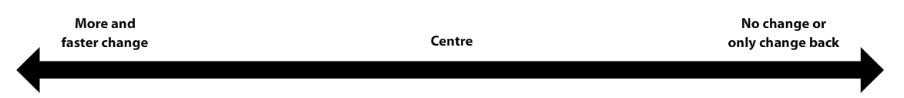
revolutionary
radical
liberal
moderate
conservative
reactionary
counter revolutionary
Today, a person or ideology which advocates rapid change is called a revolutionary or radical. Radicals can sometimes be extremists who may be willing to use violence to obtain their goals. Revolutionaries want to overthrow the existing system with a new system.
Extremists of another kind are those who strongly resist change, often violently. People or ideologies which strongly, sometimes violently, resist change are termed counterrevolutionaries or reactionaries. They often want society to go back to some past ideology or "golden age".
In the middle are people and ideologies that are characterized as moderate. Moderates who support gradual change are typically characterized as liberal. Moderates who express some resistance to change are often labelled conservative. Whatever their attitude toward change, moderates are distinguished from extremists by their unwillingness to use violence to achieve their goals.
Video - Is the Left/Right political spectrum outdated?
You will often hear/see reference to the ideological, political or economic spectrum in this course and in the news. The two videos below explain the political spectrum beyond the basics of preference for "change" outlined in the original left/right spectrum outlined above. Applying an X/Y graph to the spectrum allows for more complexity in ideologies.
View this 3-minute video to view the ideological spectrum on an X/Y Axis (notice how Left/Right still applies):
Watch this 7-minute video, "Is the Left/Right political spectrum outdated?" to see how the political spectrum applies to Canadian political parties:
Internet - Vote Compass Canada
Take the Canadian youth edition of Vote Compass to see where you land on an X/Y axis spectrum.
Click here to take the survey and view your results.
Big idea
Lesson Summary
In this lesson you moved beyond a simple dictionary definition of ideology and developed a deeper understanding of what an ideology is. You should now be aware that ideologies share certain common characteristics including, rituals, “sacred” documents and heroes, a simplified picture of the world, a belief about the nature of human beings, a plan for the structure of society and a vision of the future. You should be able to recall these characteristics and explain them.
You have also learned that certain themes of nation, class, race, environment, gender and religion tend to underlie ideologies. You should be able to recall these themes and explain why in some ideologies, certain themes may be deemed more important than others.
Finally, you have learned that ideologies can be characterized and labelled based on how they approach change. At this point, you should be able to confidently explain the difference between a moderate and an extremist. You have been introduced to the terms revolutionary, radical, liberal, conservative, counterrevolutionary and reactionary. You should be able to provide a good explanation of what each of these terms mean and you should be able to start applying them to ideologies, values and beliefs with some confidence. You will continue to develop your understanding of these labels as you progress through the course.
Glossary
left wing - a term applied to ideologies, governments, political parties and policies that promote change.
right wing - a term applied to ideologies, governments, political parties and policies that resist change or promotes change that will return society to a previous state or condition.
extremist: a person who has fanatical or immoderate views and beliefs
conservative: a person or ideology that is opposed to, or cautious about, change.
counterrevolutionary: a person or ideology that vehemently resists change or seeks change back to a previous state of affairs. Counterrevolutionaries may advocate violence to achieve their goals.
moderate: a person or ideology that shuns extremism and rejects violence as a means to achieving political or social goals.
liberal: a person who believes in the ideology of liberalism. Not to be confused with Liberal Party or a member of the Liberal Party. This would be a large "L" Liberal - a member or supporter of the Liberal Party. Conservative Party members are also small "l" liberals because they believe in a liberal ideology; not the same liberal ideologies as the Liberal Party, or the NDP. (Note: US sources often misuse the term "liberal" when they really mean socialist)
radical: a person or ideology that advocates rapid and substantial change. Often rejects political and economic traditions of the past.
reactionary: a person or ideology that vehemently resists change or seeks change back to a previous state of affairs.
revolutionary: a person or ideology that advocates rapid and substantial change and the replacement of the existing system, often through violent means.
Try it
Practice questions
Complete the 6 lesson questions below while the ideas from this lesson are fresh. Your responses save with the rest of your course notes.
1
What is something about your identity that has changed since you were in grade 1?
2
What are five examples of stereotypical gender roles that you have noticed in Canada?
3
What are three other manifestations (examples) of pluralism in Canadian society?
4
What do collectivist ideologies see as the role for governments?
5
Explain how the two persons’ thoughts are examples of individualism.
6
In three to five sentences, explain why or why not people should pay taxes that pay for services that they don’t use. For example, Zayda is 30 years old, and doesn’t go to school anymore, or have children. He finds it annoying that his tax money goes to pay for schools. Dantienne doesn’t have a car—she just walks where she needs to go—why does her tax money go to pay for roads?
Saved locally
Turn it into evidence
Build your evidence note
Save one useful idea, source detail, or question from this lesson so it can support later source work or position writing.
Ideological Approaches to Meeting the Needs of the People Get Focused Imagine you are planning to go out to the movies with a group of friends.
Big ideaTo what extent should ideology be the foundation of identity?
Section 2: Understanding Ideology
Learn / Read
Get Focused
Imagine you are planning to go out to the movies with a group of friends. One person in your group has no money but does have a gift pass for the theatre. Many of your friends in the group want to see, Radicals a just-released blockbuster, but passes are not accepted for that film. If Radicals is chosen by the group, the person with the movie pass will not be able to see it.
What course of action should be taken? Should everyone see a less popular film so that the friend with the gift pass can go to the movies? Should the person with the gift pass be left to see another film on their own? Should everyone chip in to pay the admission to Radicals for the friend that is broke?
In the example above, a decision would have to be made among a group of friends, but decisions like these are similar to ones also faced on a societal level. Ideologies typically have some approach for deciding how to balance the needs and wants of individuals with the needs and wants of society as a whole. In this lesson, you will be introduced to some dominant ideologies and begin to explore the approaches each takes to this issue.
In this lesson you will answer the question:
How do different ideologies balance the needs of the individual with the needs of the group?
Learn / Read
Explore
To have a clearer understanding of the material covered in this lesson, it is important to be familiar with two terms.
collectivism: an approach to social organization that puts the needs of the group as a whole above the needs and rights of individuals within the group.
individualism: an approach to social organization that promotes individual rights over group needs and advocates personal independence.
Reading
Read pages 71 to 79 in the textbook.
Journal/Notes - Organizing Knowledge
Now copy and expand upon the concept map below. Be sure to integrate definitions, examples, and key facts into your concept map. Place your completed concept map into your portfolio as a study aid.
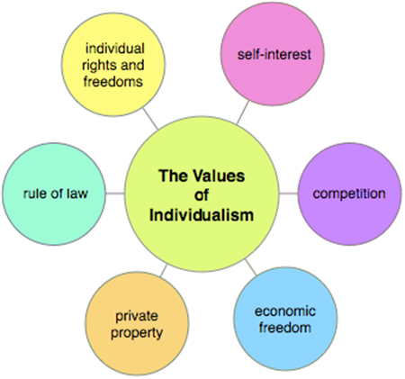
Read pages 80 to 86 in Perspectives on Ideology.
Journal/Notes - Organizing Knowledge
Copy and expand upon this concept map below. Once again, be sure to integrate definitions, examples, and key facts into your concept map. Place your completed concept map in your portfolio as a study aid.
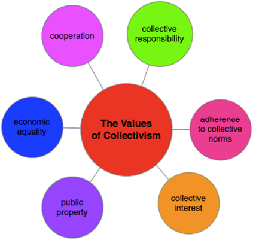
Check Your Understanding
The dominant ideologies of the twentieth century all had varying approaches to balancing individualism with collectivism.
Click the hyperlink to download the Dominant Ideologies "Study Notes" to check your understanding and retain in your notes.
Big idea
Lesson Summary
In this lesson you learned that there are two main approaches to organizing societies, individualism and collectivism. Each approach has a series of core values that relate to how people see their place in society. Individualists value independence, personal freedom, self-reliance and self-interest. Collectivists value teamwork, interdependence, equality and collective responsibility.
While no real-world society is completely collectivist or completely individualist, some of the ideologies dominant in the last century have incorporated collectivist or individualist values as a guiding principles. Communism, which holds that all property should be owned by the state and all people should work for the state, represents an extreme interpretation of collectivism. Fascism takes an extreme collectivist approach to political organization, but rejects collectivist notions of social equality. Fascism also adheres to some individualist values in the area of economics. Democratic capitalism, in its truest form, strongly advocates both individual political freedom and economic freedom. Democratic socialists, while supporting individualist values in terms of political freedom, incorporate collectivist values into their economic policies.
By now you should have a basic understanding of collectivist and individualist value systems and how they have been integrated into various ideologies. As you work through the course, you will further your understanding of how these ideologies have originated and how they have evolved.
Big idea
Section Summary
In this section you have developed a clearer understanding of what an ideology is. By now you should be able to identify some of the key characteristics that ideologies have in common and as well as themes that ideologies may focus on. You should also understand that different ideologies take different approaches to balancing the needs of the individual with the needs of the group. You should be able to identify which ideologies are more collectivist and which are more individualist.
Finally, you should now have a sense of how your beliefs and values correspond to the beliefs and value systems that underlie various ideological perspectives. You should be able to identify your and label your ideology.
You will use knowledge you have gained in this section as you as move toward answering the inquiry question of this module:
To what extent should ideology be the foundation of identity?
Watch / Listen
Podcast connection
Use these podcasts before the lesson questions. Listen for details that help answer the related issue question: To what extent should ideology be the foundation of identity?
Exploring Collectivism Podcast
Podcast companion for collectivism, common good, collective identity, and the tension between individual and group needs.
Unit 1 Section 3 Introduction In this unit’s previous sections you explored the concepts of identity and ideology.
Big ideaTo what extent should ideology be the foundation of identity?
Section 3: Ideology and Identity in Practice
Learn / Read
Unit 1 Section 3 Introduction
In this unit’s previous sections you explored the concepts of identity and ideology. In this section you will begin to develop an understanding of how identity and ideology can intertwine to influence the actions of individuals and groups of people.
In this section you will be answering the question:
Learn / Read
What is the relationship between identity and ideology?
Outcomes
In this section you will develop your understanding of ideology by:
• appreciating various perspectives regarding identity and ideology
• evaluating the extent to which personal identity should be shaped by ideologies
As well you will continue to develop the following skills and processes:
• evaluate ideas and information from multiple sources
• determine relationships among multiple and varied sources of information
• assess the validity of information based on context, bias, sources, objectivity, evidence or reliability
• evaluate personal assumptions and opinions to develop an expanded appreciation of a topic or an issue
• compare similarities and differences among historical narratives
• demonstrate proficiency in the use of research tools and strategies to investigate issues
• consult a wide variety of sources, including oral histories, that reflect varied viewpoints on particular issues
• select and analyze relevant information when conducting research
• compose, revise and edit text
• understand that different types of information may be used to manipulate and control a message (e.g., graphics, photographs, graphs, charts and statistics)
• engaging in active inquiry and critical and creative thinking
• using and managing information and communication technologies critically
• conduct research ethically using varied methods and sources; organizing, interpreting and presenting your findings and defend your opinions
• communicating ideas and information in an informed, organized and persuasive manner.
Section Glossary
partisan: strongly, or even fanatically, in favour of an idea, a political party or a cause
indoctrination: teaching a person or group to adopt a biased set of beliefs without critically analyzing them
Turn it into evidence
Build your evidence note
Save one useful idea, source detail, or question from this lesson so it can support later source work or position writing.
How can ideology shape identity? Get Focused By now you have recognized that you have your own ideological perspective.
Big ideaTo what extent should ideology be the foundation of identity?
Section 3: Ideology and Identity in Practice
Learn / Read
Get Focused
By now you have recognized that you have your own ideological perspective. You have also learned that ideology can be a factor that influences a person’s identity. (If your still have some confusion about your ideological perspective and/or how ideology can influence identity, you should ask your teacher for help). In this lesson you will investigate the degree to which ideology can play influence personal and collective identity.
In this lesson you will be answering the question:
How can ideology shape identity?
Learn / Read
Explore
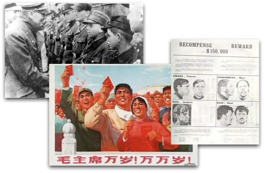
For some groups and some individuals, ideology can become one the most important, if not the single most important factor that influences their identity. There are many examples of this in history. During Mao Zedong’s Cultural Revolution in China in the 1960s, groups of young people known as the Red Guard became Mao’s ideological foot soldiers, implementing their leader’s radical programs. During the 1970s, members of the Front de libération du Québec (FLQ), viewed as terrorists and murderers by the Prime Minister and by many Canadians, saw themselves as rebels fighting to free Quebec from English and capitalist domination.
Perhaps the most famous example of ideology shaping identity, however, comes from Nazi Germany in the 1930s and 1940s. Adolf Hitler and the Nazi party started a number of youth groups, including the Hitler Jungend (Hitler Youth) for boys and the League of German Maidens for girls. Presented to youth as groups that would provide fun activities for young people, those who joined were ultimately subject to a carefully orchestrated program of indoctrination by the Nazis.
Discover
Your task is to research the Hitler Youth movement online and become reasonably well informed with respect to its history, its goals and its effects on young people? As well as doing basic factual research, where possible you should try to read accounts and recollections from former members. The idea is to try to get inside the minds of Hitler youth members to see how their identities were shaped by their involvement in the organization. By the time you are done, you should have enough background to have a basic understanding of the mindset of a Hitler Youth member.
You have been provided with a set of notes that will give you a starting point for your research. You should also expand your search beyond what is in the notes where required. If something grabs your interest don’t be afraid to explore it further. Be sure to make your own notes as you research and don’t forget to include your own impressions and opinions on what you discover. Place your notes in your portfolio when they are done. You may want to refer back to them when you take on the module level assignment.
Click here to open your copy of the Hitler Youth Research Notes
Caution: Critical Thinking Area
Based on the racist, violent and murderous acts carried out by Hitler’s Nazi regime before and during World War II, most people have rejected Nazism as an ideology. That said, far-right ideologies like fascism and Nazism still exist today and the internet does provide an uncensored forum for those few people who still adhere to these ideologies. In the course of your research you may come across some far-right websites that celebrate Nazi ideals and organizations like the Hitler Youth. Most people find the content of these sites offensive and their interpretation of history highly suspect (because they typically use logical fallacies).
Keep your thinking cap on tight as you do your research. Think critically about what you read, recognize potential bias where it exists, check facts using other sources and analyze the perspectives presented in light of what you know to be true.
Scrutinize your sources. Review the Evaluating Websites lesson in Student Tools (explore the criteria for reliable sources in detail).
Learning Activity
Hitler Youth
By now, you should be somewhat familiar with the Hitler Youth movement and the beliefs and values of those young people who saw membership in the Hitler Youth as an intrinsic part of their identity. Your first task is to complete the questionnaire below as you would imagine an ardent and fully indoctrinated member of the Hitler youth might complete it. Click here to download and open the Hitler Youth Student Identity Questionnaire.
If possible, you may wish to compare your imagined responses to the questions with those of another student who has completed the same activity. Discuss how authentic the responses are, giving and receiving feedback. Based on feedback from your classmate, you may change your responses if you wish before moving on to the next part of the activity.
When you feel you have provided fairly authentic and realistic responses to the questionnaire, you may proceed to the second part of the activity.
Now that you have predicted the likely responses of an indoctrinated Hitler Youth member, you are to complete your own version of the questionnaire, responding to the questions on the basis of your own beliefs and values. You will then be asked to compare and evaluate your responses and draw some conclusions. Click here to download and open the Student Identity Questionnaire
Going Beyond
The Hitler Youth were not the only targets of the Nazis program of ideological indoctrination. Propaganda campaigns were used to spread Nazi ideology to the population at large and to try to cultivate a single collective identity for the people of Germany.
The best known propaganda piece to come out of the period was the film Triumph of the Will. The work of famed German director Leni Riefenstahl, the film presents the 1933 Nazi Party Rally as an event of remarkable ceremony and grandeur. Triumph of the Will is still considered to be a landmark in the production of propaganda films. It is widely available in libraries and video outlets and is worth a look for anyone who wants to gain insight into how propaganda can be used to cultivate a unified collective identity. You may even find it streaming on the internet.
Big idea
Lesson Summary
In this lesson you have researched the Hitler Youth movement as an extreme example of how ideology can shape identity. By envisioning how ideology shaped some Hitler Youth members views of themselves and their society and comparing it with your own views, you have gained further insight into how ideology has shaped your own identity.
Glossary
indoctrination: teaching a person or group to adopt a biased set of beliefs without critically analyzing them
Watch / Listen
Podcast connection
Use this podcast before the lesson questions. Listen for details that help answer the related issue question: To what extent should ideology be the foundation of identity?
Identity & Ideology Podcast
Podcast companion for connecting personal identity, beliefs, values, and ideology to the first related issue.
Complete the 2 lesson questions below while the ideas from this lesson are fresh. Your responses save with the rest of your course notes.
1
What is something about your identity that has remained the same about you since you were in grade 1?
2
Case Study: Bjorn moves from Sweden to Canada. He badly wants to stay in touch with his Grandparents, and is afraid that as he learns English, he will eventually lose his Swedish language and heritage. What do you recommend to him to keep his Swedish identity alive?
Saved locally
Turn it into evidence
Build your evidence note
Save one useful idea, source detail, or question from this lesson so it can support later source work or position writing.
Pros and Cons of Linking Identity with Ideology (Part I)
Linking Identity and Ideology: Pros and Cons Get Focused In the last lesson, you explored the extent to which identity can be shaped by ideology.
Big ideaTo what extent should ideology be the foundation of identity?
Section 3: Ideology and Identity in Practice
Learn / Read
Get Focused
In the last lesson, you explored the extent to which identity can be shaped by ideology. In this lesson you’ll start to think about the implications of this relationship between identity and ideology. You’ll review the negative consequences of ideology being the primary factor in shaping identity, but you’ll also speculate on potentially positive outcomes of linking ideology and identity.
In this lesson you will answer the question: What are the advantages and disadvantages of linking identity with ideology?
Learn / Read
Explore
Review the following articles, cartoons and multimedia files and consider their relevance to ideology and identity. How do they provide examples of the advantages and disadvantages of linking ideology to identity? Jot down your ideas in your notes so you can recall them later.
This is a screen shot of the Saskatchewan Young Liberal Organization website. The text reads:
Take Action
Add your voice to the Saskatchewan Young Liberals...Click Here to Join Today!
Whatever you're looking for - policy, campaigning, or just a lot of fun...
Saskatchewan Young Liberals are the place for you!
Why should I join?
Joining the Saskatchewan Young Liberals offers you an unprecedented opportunity to become involved in the political process and to have your voice heard! It's also a great way to meet new life-long friends, meet influential politicians, attend provincial or national policy and leadership conventions, and take part in other exciting events.
Why the Moon?
On October 4, 1957 the Soviet Union launched a basketball sized sphere into space. Sputnik was the first man-made satellite to orbit the earth and the radio signals it beamed back to earth did far more than provide information about the planets upper atmosphere, they served notice of the Soviet Union’s advanced rocketry capabilities. This fact was tremendously worrisome to American political and military leaders. If the U.S.S.R. could launch a satellite into orbit atop a missile, they might soon be capable of launching atomic weapons at the United States with the same technology.
But beyond the military threat, Sputnik represented an ideological slap in the face to the United States. The Soviet Union, a collectivist and totalitarian dictatorship, had beaten America, a liberal democracy, into space. The Russians could now claim that communist ideology was obviously more capable of advancing humanity than capitalism and democracy. The Soviet Union would reinforce that point on April 12, 1961 when Soviet cosmonaut Yuri Gagarin became the first man to orbit the earth.
Sputnik and Gagarin’s mission had left the United States playing catch-up in what would come to be called the “space race”. A month after Gagarin’s flight, the Americans launched Alan B. Shepard on a sub-orbital flight that made him the second man, and the first American, in space. For the Americans this was a step in the right direction, but coming in second still paled in comparison to the Soviets’ achievements.
Listen - JFK
On May 25, 1961 U.S. President John F. Kennedy, speaking to Congress, unequivically linked success in the race for space with the battle between the ideals of democracy and capitalism and those of communism.
Listen to this audio excerpt of John F. Kennedy’s Special Message to the Congress on Urgent National Needs delivered in person before a joint session of Congress May 25, 1961:
Text of the excerpt:
“Finally, if we are to win the battle that is now going on around the world between freedom and tyranny, the dramatic achievements in space which occurred in recent weeks should have made clear to us all, as did the Sputnik in 1957, the impact of this adventure on the minds of men everywhere, who are attempting to make a determination of which road they should take.”
“But in a very real sense, it will not be one man going to the moon--if we make this judgment affirmatively; it will be an entire nation. For all of us must work to put him there.”
John F. Kennedy
“Message to the Congress on Urgent National Needs”
Delivered in person before a joint session of Congress
May 25, 1961
Kennedy then raised the bar in the space race by vowing that the United States would put a man on the moon before the end of the 1960s. He made it clear to Americans that it was a collective goal of all Americans to demonstrate the superiority of American political and economic ideology.
The goal of landing a man on the moon did inspire Americans. Media and public interest in the Apollo moon program was massive. An entire industry was set up around the space program. Billions of taxpayer’s dollars were spent developing the necessary technology with little complaint from the people. On July 20, 1969, the people of the United States were rewarded. American Neil Armstrong became the first person to step on the surface of the moon. The Apollo 11 moon landing, broadcast live on televsion around the world, solidified the U.S’s position as the world’s dominant space power. Moreover, if the space race was an ideological contest as well as a technological one, democracy and capitalism could now be trumpeted as superior to communism. For their part, after Apollo 11, the Soviets bowed out of the race to put a man on the moon, labelling the American missions wasteful and claiming that similar science could be accomplished cheaper with robotic craft (with many "firsts" in that field).
It became clear that in the years following the Apollo 11 landing that Americans had identified with the ideological aspects of the space race. Subsequent moon landings provided a wealth of scientific data about the origins of the Earth, the Moon and the planets. The Apollo program itself had generated technological innovations that were finding their way into products purchased by average Americans. Despite this, public interest in space exploration quickly waned after Apollo 11.
Funding for the Apollo program quickly dried up. Apollo 17 became the last moon mission. The three subsequent missions were all cancelled. Sending people to the moon was expensive and for most Americans, the superiority of democracy and capitalism had been proven with the first moon landing.
Media - Enrichment
View the television footage from the first moon landing:
Or do a search for "television footage of first moon landing."
Journal/Notes
Do you think the Apollo program would have been launched if a communist nation had not first made advances in space? Did Americans predominantly identify with the Apollo program as a scientific endeavour or an ideological competition? If the latter, does this diminish the scientific achievements of the program?
Glossary
partisan: - strongly, or even fanatically, in favour of an idea, a political party or a cause
Video: Partisan Politics and Political Polarization
Watch this 60 second video, from Business Insider, depicting how the US Congress has become more partisan in the past 30 years:
Can you think of any reasons why this might be a problem?
Watch this 4-minute PBS video and try to identify problems with partisanship discussed in the video. Record your findings in your notes:
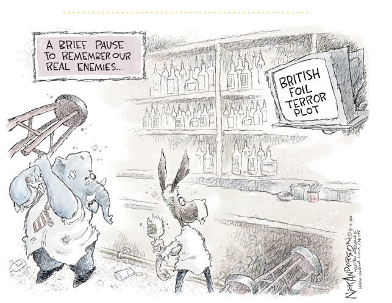
This cartoon depicts a donkey and an elephant dressed in shirts and ties and apparently involved in a bar-fight with one another. A TV in the corner of the bar projects a news flash that states “British Foil Terror Plot”. The cartoon caption reads “A brief pause to remember our real enemies...”
Analyze the symbols. Why has the cartoonist chosen a bar fight to indicate conflict between two political entities as opposed to, for example, a boxing match? What is the cartoonist saying about the reasons for the conflict? What criticism is the cartoonist levelling at internal ideological conflict in the U.S. in a time when democracy appears threatened by external forces?
Confused by the cartoon? Do a web search to try to make things clearer. Hint: The animals in the cartoon are political symbols in the United States.
"The issue [climate change] has been swept up in a much larger, broader trend of polarization in US politics .... As Americans sort themselves into camps, both ideologically and geographically, political orientation becomes more and more a matter of identity ..."
"Skepticism toward climate change and hostility toward climate policy have been yoked to conservative identity. To reject them is to risk rejecting that identity and harming the social relationships that come with it. And most people have much stronger commitment to their core identity than they do to any individual political issue."
"Once an issue has been yoked to our core identities, we stop reasoning like scientists (gathering evidence, seeing where it leads) and start reasoning like lawyers (start with a conclusion, work backward to build a case). Yale psychologist Dan Kahan calls it "motivated reasoning"— "the unconscious tendency of individuals to process information in a manner that suits some end or goal extrinsic to the formation of accurate beliefs." In this case, the "end or goal" is preserving commitments core to identity."
See this article summarising a study suggesting ideological identity influences perceptions of climate change.
Did you know Elections Canada ruled that reference to facts about climate change can be seen as partisan advertising during the 2019 Federal Election? How can stating facts be politically partisan? Do you agree with this decision? See Brian Owens, "Climate facts subject to rules on partisan advertising in Canada," Science, August 20 2019.
What might a reasonsed but still ideological debate on climate change look like when partisanship does not cloud one's perception of reality? Could a serious ideological debate focus instead on how to respond to the reality of climate change?
Conservatives (individualists) might present an argument private enterprise, profit motive and free markets are the best way to prevent further global warming.
Collectivists might argue we need the government to intervene because private corporations will not solve this problem, or if left to market forces, not quickly enough.
A third ideological perspective might argue we need a combination of private and government (individualist and collectivist) solutions to address the problem of climate change.
To make a convincing argument defending any of those ideological positions, one could look at examples of each of those ideological perspectives in practice and compare the results.
Watch / Listen
Podcast connection
Use this podcast before the lesson questions. Listen for details that help answer the related issue question: To what extent should ideology be the foundation of identity?
Individualism vs Collectivism Podcast
Podcast companion for comparing individualist and collectivist values as foundations for identity and ideology.
Pros and Cons of Linking Ideology with Identity (Part II)
Linking Identity and Ideology: Pros and Cons (Part II) Ideology as Identity in the USA Read this short article, from The Atlantic, about ideology uniting Americans: Why Are Americans So Ideologically United?
Big ideaTo what extent should ideology be the foundation of identity?
Section 3: Ideology and Identity in Practice
Learn / Read
Linking Identity and Ideology: Pros and Cons (Part II)
This is an American World War II era poster entitled “OURS... to fight for” . The poster depicts four different illustrations by Norman Rockwell. In the first, captioned “Freedom of Speech” a man stands up to speak at a community meeting. The second, captioned “Freedom of Worship” depicts worshippers praying. The third, captioned “Freedom from Want” depicts a family dinner in which a large turkey is being served. The fourth, captioned “Freedom from Fear” depicts a mother and father tucking their children into bed.
Are there ever advantages when conflict arises between societies that identify with vastly different ideologies?
Multiplel Perspectives - Ideology as Identity in the USA
American national identity is inextricably tied to the fundamental moral principles that led to the formulation and development of the American Constitution and the rule-of-law culture that it represents. A salient question concerning United States foreign policy has been the extent to which fundamental moral precepts borne of our constitutional experience should not be reflected in our construction of foreign relations law, national security law, and international law, including international human rights law. An expectation held by many thoughtful observers of the international scene is that a state with the immense power of the United States must be seen to be the exemplar of its values in the international community, and that its commitment to the international rule of law must be as firm and consistent as its commitment to its own constitutional values.
from Patriotism, Nationalism and the War on Terror: A Mild Plea in Avoidance
Winston P. Nagan & Craig Hammer
Journal/Notes
Should the rights, freedoms and legal protections that form the foundation of democratic ideals be offered to those who are regarded as a threat to democracy? Is it acceptable to lock suspected terrorists away without trial? Is such action consistent with Americans' perception of themselves and their nation?
Multiple Perspectives
Ideology and Identity in the USSR
"After the anarchy that followed the collapse of the Soviet Union in 1991, a period when democracy came to represent confusion, crime, poverty, oligarchy, anger and disappointment, it turned out that Russians didn't like their new, "free" selves. Having for centuries had no sense of self-esteem outside the state, we found ourselves wanting our old rulers back, the rulers who provided a sense of order, inspired patriotic fervour and the belief that we were a great nation. We yearned for monumental -- if oppressive -- leaders, like Ivan the Terrible or Stalin. Yes, they killed and imprisoned, but how great were our victories and parades! So what if Stalin ruled by fear? That was simply a fear for one's life. However terrifying, it wasn't as existentially threatening as the fear of freedom, of individual choice, with no one but oneself to blame if democracy turned into disarray and capitalism into corruption."
“Why Russia Still Loves Stalin”
By Nina L. Khrushcheva
Washington Post, February 12, 2006
Ideology and Identity in Nazi Germany
“One young person cried that he could not bear to watch his ideals ‘sink into the mud’; another claimed that he had ‘lost my belief in humankind.’”
Source: Hitler Youth,
Michael H. Kater
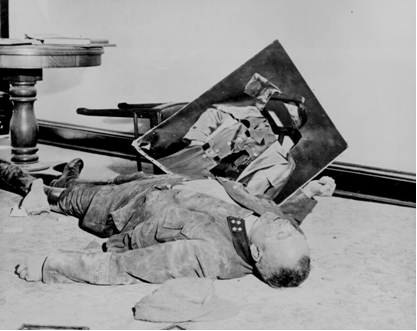
This is photo from the United States National Archives and Records Administration. The caption reads: “With torn picture of his fuehrer beside his clenched fist, a dead general of the Volkssturm lies on the floor of city hall, Leipzig, Germany. He committed suicide rather than face U.S. Army troops who captured the city on April 19, 1945.”
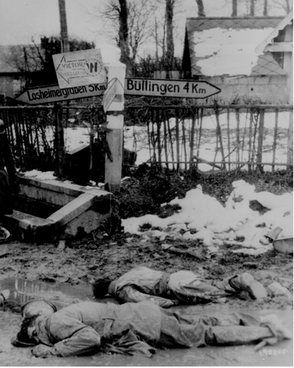
After D-Day, during the Battle of Normandy, the 12th SS Panzerdivision Hitlerjugend - made up of Hitler Youth members, mostly 16-17 year-olds but some younger children too - put up a fierce resistance and counter attacks against the Canadian Army at Caen and the Falaise Pocket.
What could it have been like for Canadian, in their 20s (26 was the average age of Canadian soldiers in WWII), to be in the position of fighting and killing children, perhaps the age of a younger brother, or about your age now and some even younger?
Later that year the 12th SS fought the Americans at the Battle of the Bulge. This is a photo of American soldiers, stripped of all equipment, lying dead, face down in the slush of a crossroads somewhere on the western front during December 1944.
“Some of these youthful soldiers engaged in suicide missions that seasoned Wehrmacht would never have dared to attempt, such as allow tanks to roll over them then detonating a grenade... ....Their fanatical faith in their cause and themselves led them to commit war crimes, however; in the late summer of 1944 they shot sixty-four British and Canadian prisoners of war.”
an account of the 12.SS-Panzer-Division 'Hitlerjugend”
from HitlerYouth
Michael H. Kater
During the Nuremberg trials, a former leader of the Hitler Youth, Baldur von Schirach, reflected on his role after the trial:
"I have trained this generation to believe in Hitler and to be faithful to him. The youth movement which I built up bore his name... It is my guilt that I have trained youth for a man who became a murderer a million times over."
Source: Eileen Hayes, "Children of the Swastika" Milbrook Press, Connecticut 1993) p.78
Reading - Betraying the Youth
Read this short article about how one Hitler Youth member felt after the war.
Enrichment Reading
If you are interested in a more comprehensive look at the guilt and shame experienced by Hitler Youth members in the years after the war, borrow from a library Ursula Malendorf's book, The Shame of Survival: Working Through a Nazi Childhood (2009) and/or Michael Kater, Hitler Youth (2004).
Journal/Notes
If an individual's or a group's identity is closely tied to a particular ideology, what might the effect be if that ideology becomes outmoded?
What are the potential personal and societal benefits of individuals openly identifying with a particular ideological perspective? Are there potential drawbacks?
Media
Watch this 30-second anti-racism video produced by students in Canada:
You can also download the .MOV file directly to your computer here.
A fully indoctrinated Hitler Youth member would likely see the video above as a foolish attempt to deny the superiority of one race over others. Should such a perspective be seen simply as different, or should it be deemed fundamentally wrong? How do you know? What criteria should be used to judge if a particular ideological perspective is worthy of identifying with or should be rejected?
The Killing Fields of the Khmer Rouge
The twentieth century is rife with examples of inhumanity and mass murder. The best known is undeniably the Holocaust, Hitler’s attempt to wipe out the Jews of Europe. Immersed in Nazi ideology, German soldiers and police officers rounded up Jewish men, women and children from across Nazi occupied Europe. If they were not murdered outright by those who had captured them, the Jewish prisoners were shipped off to camps dedicated to the murder of Jews, Roma, homosexuals and others that didn’t fit into the Nazi vision of the world.
As the scope of the Holocaust became evident at the end of World War II, the newly formed United Nations took steps to prevent such a horror from occurring again. And yet it has occurred in Rwanda, the Sudan and in Cambodia.
In Cambodia, a five year civil war that started in 1970 ended when, in 1975, the Marxist group known as the Khmer Rouge finally succeeded in eliminating its right-wing rivals and overran Cambodia’s capital, Phnom Penh.
The Khmer Rouge’s leader, Pol Pot, implemented a strict ideological program that might be described as “agrarian Maoism”. He and his followers believed that all people should live in agricultural communes. All citizens should be farmers. Under the Khmer Roughe, capitalist trappings like private property and money were abolished. Buddhism and other religions were banned. Pol Pot’s policies were designed to return Cambodia to a pre-industrial state.
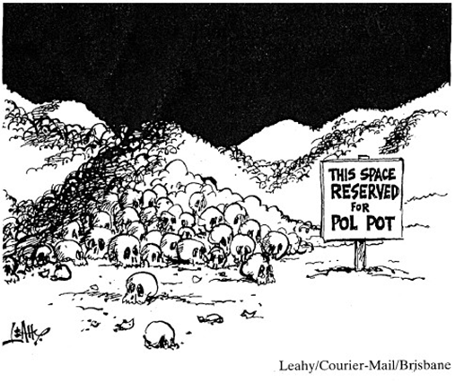
Cambodians were forced from the cities and required to slave away in the fields, watched constantly by armed Khmer Rouge fighters. Any perceived lack of effort on the part of workers could bring instant death. Intellectuals, associated by the Khmer Rouge with the old capitalist industrial society, were often killed outright. Teachers, university students and anyone who had previously had a modicum of education or wealth were targeted for executions. Hundreds of thousands were tortured and killed, sometimes for something as simple as wearing glasses.
Cambodia was, for all intents and purposes, plunged back into the middle ages by Pol Pot’s policies. During the five year rule of the Khmer Rouge it is estimated that over two million Cambodians died. Those who weren’t executed were worked to death or died of starvation or disease.
Finally, in 1979, Cambodia was invaded by the Vietnamese Army and the Khmer Rouge regime was overthrown. Pol Pot and his followers retreated to the jungles where they formed an ineffectual resistance army. Eventually, in 1996, the Khmer Rouge laid down their arms and abolished their organization. Pol Pot, although he had been denounced by the Khmer Rouge and put under house arrest, ultimately died of natural causes. He was never brought to trial for the millions of deaths he ordered in his name.
Journal/Notes
What are the potential pitfalls for individuals and societies of allowing ideology to become the primary guiding force in one's life? Are there any potential benefits to identifying closely with a political ideology?
Big idea
Lesson Summary
Whether or not linking ideology and identity can be seen as positive depends heavily on the nature of the ideology to which people adhere and the degree to which they incorporate ideology into their identity. As illustrated by many of the case studies you have reviewed, the linking of individual and collective identity to ideology has contributed to some of humanity’s most barbaric acts, but also some of it’s greatest achievements. In some cases, linking ideology and identity has served to advance human society. In other cases, it has impeded progress.
As you move through the course, and indeed through life, you will need to continue to assess the advantages and potential pitfalls of linking ideology and identity.
Big idea
Section Summary
In this section you have developed an understanding of the degree to which ideology can influence individual and collective identity. You should be able to provide examples that illustrate how ideology can influence identity in the extreme and also how ideology can influence identity in more subtle ways. You should have some sense of the potential advantages and disadvantages of linking one’s identity to a particular ideological perspective.
Armed with this information, you should now be ready to tackle the inquiry question for this module:
To what extent should ideology be the foundation of identity?
Check Your Understanding
Now that you have had a chance to review all of the readings, images and multimedia files, look over the notes you’ve jotted down. What generalizations can you make about the advantages and disadvantages of linking identity and ideology?
Perhaps one of the best examples of the creation of a “hero” to promote an ideology was the German Nazi Party’s elevation of Horst Wessel to the role of martyr. A catchy marching tune was even adapted to sing his praises. Research Horst Wessel and find out how he was “marketed” to young Germans as an example to emulate.
Big idea
Unit 1 Summary
The relationship between identity and ideology is an important one. As you have seen, some individuals and groups make ideology the underpinning of their identity, sometimes with grave consequences, sometimes with great benefit to themselves and their societies. For others, ideology plays less of a role in shaping identity. There are advantages and drawbacks to this as well.
In this unit you have had a brief introduction to some of the ideologies that have been predominant in recent human history. You have also had the opportunity to draw some conclusions regarding the extent to which ideology should serve as the foundation of identity. As you continue through the course, keep an open mind. After you learn more about ideologies and see them from different perspectives, you may find yourself re-evaluating the conclusions you have reached thus far.
Watch / Listen
Podcast connection
Use this podcast before the lesson questions. Listen for details that help answer the related issue question: To what extent should ideology be the foundation of identity?
Individualism vs Collectivism Podcast
Podcast companion for comparing individualist and collectivist values as foundations for identity and ideology.
How did liberalism originate? Unit Introduction By now you probably have started to develop your own picture of what the words “liberal” and “liberalism” mean.
Big ideaTo what extent should ideology be the foundation of identity?
Unit overview
Learn / Read
Unit Introduction
By now you probably have started to develop your own picture of what the words “liberal” and “liberalism” mean. In this unit you will look deeper into the meanings of those words, building on the picture you have created and clarifying and modifying your understanding of liberalism.
You will also begin a journey into the past. The English word “history” is derived from the ancient Greek word historia, which means “finding out” or “to learn by investigation or inquiry”. In order to improve your understanding of the modern view of liberalism this unit will require you to “find out” about the early history of liberalism. You will learn about the cultures and societies that pioneered many of the principles of liberalism in the distant past. You will familiarize yourself with the concept of liberalism that developed in western Europe and America during the 18th and 19th centuries and you will discover how these theories were put into practice. Finally you will begin to evaluate 18th and 19th century liberalism, identifying the successes and failures that resulted from the practical application of liberal ideology.
On completion of the unit, you should be well positioned to respond to the key question explored in the unit, “How did liberalism originate?” And, as you become more aware of the positive and negative societal impacts that can take place when theories and ideas become policies and practices, you will be closer to deciding to what extent we should embrace an ideology.
Watch / Listen
Podcast connection
Use these podcasts before the lesson questions. Listen for details that help answer the related issue question: To what extent should ideology be the foundation of identity?
Big Thinkers of Political Theory Podcast
Podcast companion for Hobbes, Locke, Marx, and the big theoretical disagreements behind liberal and collectivist thought.
What is Liberalism? Section Introduction In the previous unit, you were introduced to variety of ideologies.
Big ideaTo what extent should ideology be the foundation of identity?
Section 1: Liberal Democracy
Learn / Read
Section Introduction
In the previous unit, you were introduced to variety of ideologies. In this section, you will focus specifically on liberalism, clarifying and further developing your understanding of the fundamental values that underlie it and the varying perspectives that exist within it.
In this section you will be answering the question:
What is liberalism?
In This Section
In this section there are two lessons.
In each lesson you will have opportunities to further your understanding of fundamental ideals of liberalism
clarify the meanings of terminology associated with liberalism
develop an understanding the varying ideological perspectives that exist within the broad scope of liberalism
Outcomes
In this section you will develop your understanding of ideologies by:
• analyzing individualism as a foundation of ideology through an examination of the fundamental principles of liberalism (individual rights and freedoms, self-interest, competition, economic freedom, rule of law, and private property)
• examining contemporary expressions of individualism and collectivism
• examining the characteristics of ideology (interpretations of history, beliefs about human nature, beliefs about the structure of society, visions for the future)
As well you will continue to develop the following skills and processes:
• engaging in active inquiry and critical and creative thinking
• using and managing information and communication technologies critically
• conducting research ethically using varied methods and sources; organizing, interpreting and presenting your findings
• communicating ideas and information in an informed, organized and persuasive manner.
Section Glossary
competition: in terms of economics, the concept that those who produce and sell goods compete with one another for the consumers’ dollars
economic freedom: the concept that individuals should be able to own property and produce and sell goods with a minimum of interference from the government (see also laissez-faire)
individual rights and freedoms: the universally accepted or legally granted power of the individual to engage in certain activities or exercise certain privileges
private property: property that is owned by individuals or groups of individuals as opposed to the government
rule of law: the concept that all individuals, regardless of wealth, social status or political power, are equally subject to the law; nobody is above the law
self-interest: one's personal interest or advantage; the economic or political advancement of the individual (as opposed to the group)
Watch / Listen
Podcast connection
Use this podcast before the lesson questions. Listen for details that help answer the related issue question: To what extent should ideology be the foundation of identity?
State of Nature Podcast
Podcast companion for social contract thinking and the assumptions about human nature behind liberal democracy.
Learning the Basics of Liberal Democracy Get Focused Liberalism, as an ideology, has existed for hundreds of years and some of it's main principles, even longer than that.
Big ideaTo what extent should ideology be the foundation of identity?
Section 1: Liberal Democracy
Learn / Read
Get Focused
Liberalism, as an ideology, has existed for hundreds of years and some of it's main principles, even longer than that. As you will discover in later sections of this course, liberalism has evolved over time. Its core beliefs and values have been modified as human society has evolved and changed. As the ideology has evolved, the term liberalism has come to have both broad and narrow meanings. In modern society, there are many individuals who would support the basic ideals of liberal democracy, but would be unlikely to characterize themselves as “liberals”. In this lesson, you will explore the basic beliefs and values associated with liberal democracy, which is associated with the broadest interpretation of the term “liberalism”.
In this lesson you will explore the question: What are the basic beliefs and values associated with liberal democracy?
Learn / Read
Explore
By now you likely have some understanding of what ideologies are and what liberalism is. If you are going to fully evaluate the strengths and weaknesses of liberalism as an ideology, however, you will need to have a more detailed understanding of the principles that underlie liberal democracy. Let’s start by reviewing what you already know about democracy.
Read these instructions in their entirety before you begin.
Your task now is to use internet resources to expand upon and clarify your knowledge of the fundamental principles of democracy. Using at least two different internet search sites, search the following phrases:
“what is liberal democracy” “principles of liberal democracy” “what is democracy” “principles of democracy” “characteristics of democracy”
Review the top few links returned by your search and make sure they will help you to complete the Principles of Democracy chart. Bookmark the sites you wish to return to. Consult the toolkit for guidance in assessing websites. When you feel you have collected a sufficient number of varied sources, you may begin reading them and filling in the chart. (One chart entry has already been provided for you as an example.)
It is important that you do not simply cut and paste information from websites into the chart. Instead, read the information, assimilate and understand it and then verify your understanding by reformatting the information into your own words.
As you conduct your research, keep the following things in mind:
Try to steer clear of popular, user-editable online encyclopedias such as wikipedia. While they sometimes serve as a good starting point for further research, there is typically little editorial control over their content. In many cases, anyone with an internet connection can modify entries. The information provided should not be deemed reliable unless it is verified through other sources.
Government sites and educational institutions frequently offer reliable information. (Engage in critical thinking when visiting these sites as well. A government or educational internet domain at the end of a URL is not an absolute guarantee of quality.)
Choose sources most suitable to your task. Websites with clear headings and concise descriptions are more suited to this inquiry activity than detailed academic papers.
Evaluate multiple sites and compare information. This will provide you with a more detailed understanding of the concepts and also allow you to check the veracity of sources against one another.
If you run up against a term or concept you don’t readily understand, dig deeper (don't just move on). Do a search on terms and concepts you’re struggling with. Try to find sites that will explain and clarify difficult concepts. If you're still confused, make a note in the space provided in the chart so your teacher can help clarify things.
Big idea
Lesson Summary
The principles you have studied form the ideals on which of liberal democracy is based. Democratic nations adhere to them varying degrees depending on the kind of democracy they practice and the internal and external challenges they may face. As you move forward in the course and begin to assess the worthiness of various ideologies and the nations that practice them, you will find yourself reflecting back on these as potential benchmarks for comparison.
Watch / Listen
Podcast connection
Use these podcasts before the lesson questions. Listen for details that help answer the related issue question: To what extent should ideology be the foundation of identity?
Individualism Podcast
Podcast companion for individualism, self-interest, autonomy, and the way individual rights shape liberal identity.
Ideological Perspectives Under Liberalism Get Focused Liberalism is a term that applies to a set of ideals which form the guiding principles for most democracies.
Big ideaTo what extent should ideology be the foundation of identity?
Section 1: Liberal Democracy
Learn / Read
Get Focused
Liberalism is a term that applies to a set of ideals which form the guiding principles for most democracies. Yet within democracies there can still be room for a considerable variety of viewpoints on politics and government. You may know people who consider themselves liberals. You may know others who, though they clearly support the fundamental democratic ideals associated with liberalism, refer to themselves as “conservatives”. How is it possible for someone who says they’re not a liberal to exist comfortably under a governmental system based on liberalism?
An understanding of the subtleties of the terms “liberalism”, “liberal” and “conservative” will be essential to avoiding confusion as you continue through the course. Moreover, knowledge of what it means to be a liberal or a conservative within a liberal democracy will serve you well as you proceed further in the course and continue to develop an understanding of your own ideological perspective.
In this lesson you will explore the question: What ideological perspectives exist under the umbrella of liberalism and liberal democracy?
Learn / Read
Explore
Video - Ideologies Under the Umbrella of Liberalism
View this 17-minute video, Under the umbrella of liberalism. It explains the ideologies found within liberalism.
Viewing a video is a fairly passive activity. Research has shown that you are much more likely to understand information presented, and your brain is more likely to store that information in long-term memory, if you are required to manipulate the information in some way.
While you view the video - make a concept map that illustrates the concepts discussed in the video. Move back and forth through the video as necessary to find the information you need.
In your concept map, include some examples that illustrate the perspectives presented. You may be asked to discuss liberal and conservative perspectives in a future position paper—the ability to clarify your points with examples will be crucial, as well on the diploma exam.
You can also click here to download and open the .MOV video file on your computer.
Learn / Read
Use and misuse of the term liberal
The terms liberal; "liberal"; and Liberal can be misused, especially in US culture and media.
A liberal is a person that believes in liberalism. Therefore, even conservatives are liberals because conservativism is one branch of liberalism. In Canada, both the Liberal Party and the Conservative Party both believe in liberalism (just different kinds of liberalism) and liberal democracy. Technically, and in academic writing, both are liberals.
When we speak about Liberals - note the upper case - we are talking about members or supporters of the Liberal Party of Canada.
The term "liberal" is used incorrectly in the USA (and more frequently here) to describe only those liberals on the left side of the liberal spectrum (eg. members of the Democratic Party in the USA are labeled as "liberals" by conservatives in the Republican Party - they also incorrectly associate liberalism with socialism). Republicans are referred to as conservatives (an even more accurate description now would be to label them classical liberals or neo-liberals, but more on this later). Yet Republicans also believe in liberalism, just further right on the liberalism spectrum.
The correct term for a Liberal Part or Democratic Party might instead be "modern liberal", whereas a Conservative or Republican would be considered a "classical liberal or neo-liberal", but both are liberals because they both believe in liberalism.
What does this mean? It means you must pay attention to the context in which the term is being used
Going Beyond
Did you notice the colors used in the video you watched? Certain colours are often associated with particular ideologies and particular political parties. Having an understanding what various colours symbolize with respect to politics is helpful in understanding political maps and discussions between political commentators. It will also allow you to better understand the humour presented in may late night comedy programs that poke fun at politics and politicians.
Do a little research on the web. Take a look at the websites of Canada’s major political parties. What colours dominate? Try to find out what is meant by “red states” and “blue states” when discussing American politics. Find out what colors are associated with extremist ideologies. Who were the “brownshirts”? Who were the “blackshirts”? What is meant by the phrase “Better Dead than Red”?
Big idea
Lesson Summary
From this lesson you have worked to develop a clearer understanding of the terms “liberalism”, “liberal” and “conservative” and how they are used. You should be aware that the term liberalism can be applied to the broad set of values associated with democracy. The word liberal can also be associated with a narrower interpretation of how those values should be implemented. Often in opposition to those, are conservative interpretations of how a liberal democracy should function.
As you begin to look at the history of liberalism in subsequent sections, you will continue to build on your understanding of these terms. You will also discover how their meaning, and the beliefs associated with them have evolved over time.
Big idea
Section Summary
In this section, you have developed an understanding of the fundamental values associated with liberalism and the varying perspectives that exist within it.
You should be able to confidently use the terms liberal and conservative as they exist within the context of a society based on the ideas of liberalism. As well, you should also be able to identify liberal and conservative values and beliefs. This understanding should make it possible for you to explain how they exist within the larger context of liberalism. If you are still struggling with these concepts, you should contact your teacher for assistance.
The introduction into contemporary interpretations of liberalism in this section will provide a reference point as you move to explore the historical evolution of liberalism. This is a necessary piece as you work to seek an answer to the question:
How did liberalism originate?
Watch / Listen
Podcast connection
Use these podcasts before the lesson questions. Listen for details that help answer the related issue question: To what extent should ideology be the foundation of identity?
Exploring Collectivism Podcast
Podcast companion for collectivism, common good, collective identity, and the tension between individual and group needs.
Unit 2 Section 2 Introduction In this module’s previous sections you clarified your understanding of what liberalism is.
Big ideaTo what extent should ideology be the foundation of identity?
Section 2: Origins of Classical Liberalism
Learn / Read
Unit 2 Section 2 Introduction
In this module’s previous sections you clarified your understanding of what liberalism is. In this section you will explore the history of liberalism, examining the societies, events and individuals that contributed to its development as a major ideology. This will provide you with the background knowledge you will need to understand why early forms of liberalism evolved as they did.
In this section you will be answering the question: What were the characteristics of early forms of liberalism?
In This Section
In this section there are two lessons.
In each lesson you will have opportunities to
discover how early civilizations incorporated aspects of liberalism into their society
become familiar with the thinkers and theories associated with classical liberalism
Outcomes
In this section you will develop and appreciation for the Aboriginal contributions to the development of ideologies
explore Aboriginal contributions to the development of liberalism
examine the relationship between the principles of liberalism and the origins of classical liberal thought
As well you will continue to develop the following skills and processes:
• apply historical and geographic skills to bring meaning to issues and events
• use and manage information and communication technologies critically
• conduct research ethically using varied methods and sources
• communicate ideas and information in an informed, organized and persuasive manner.
Section Glossary
capitalism:
an economic system based on free markets, private ownership of the means of production, competition, wise consumers, and profit-motivated producers
direct democracy: a governmental system in which all eligible citizens vote directly upon issues before the government
divine right of kings: the theory that absolute monarchs held power because God had chosen them to rule
free market system: an economic system in which individuals are free to own property, produce goods, and buy or sell goods and services with little or no government interference; also called the market system, free enterprise, private enterprise (see also laissez-faire). This is a key component of capitalism.
invisible hand: in economics, the concept that the individual self-interest and competition would regulate the economy
laissez-faire:
A theory that supports non-interference or non-intervention in the economy; a system that advocates little or no government interference in the economic affairs of the people (literal translation from French: "let do" or "let work")
mercantilism: an economic system that was characterized by efforts to restrict trade between nations, regulate economic activity and accumulate gold bullion in the national treasury.
oligarchy: a governmental system in which power is concentrated in the hands of a small group of unelected people
Watch / Listen
Podcast connection
Use these podcasts before the lesson questions. Listen for details that help answer the related issue question: To what extent should ideology be the foundation of identity?
Origins of Liberalism Podcast
Podcast companion for the early ideas and historical changes that shaped classical liberalism.
The Early Origins of Liberalism Get Focused Think about the ideals you know to be associated with liberalism.
Big ideaTo what extent should ideology be the foundation of identity?
Section 2: Origins of Classical Liberalism
Learn / Read
Get Focused
Think about the ideals you know to be associated with liberalism. If you could travel back to different times and different places, where might you expect to find societies based around those ideals? Are equality, liberty and rule by the people purely modern concepts? What about the rule of law or freedom of religion?
Ideas, like people and nations, have a history. The origins of the liberalism we know today can be traced to many places and many times.
In this lesson you will explore the question: How did pre-18th century societies foster and advance the basic ideals of liberalism?
Learn / Read
Explore
Seeds of Liberalism: Ancient Athenian Democracy So what was the earliest example of a society founded on the ideals of liberalism?If you were to assume, for a moment, that liberalism is roughly synonymous with democracy, you might be inclined to point to the ancient Greek city state of Athens.
Democracy, as it existed in ancient Greece, can certainly be identified as the source of many ideas associated with modern democracy. In fact the very word democracy is derived from the ancient Greek word demos kratia, which means “the people rule”. But while the ancient Athenians did employ a form of democracy, it was not liberal democracy as we understand it today.
Firstly, only about twelve percent of the roughly quarter of a million people that lived in the Athenian city state had any legal right to participate in the democratic decision-making process. Only male “citizens” of Athens were eligible to attend assembly meetings. Women, the foreign-born, slaves and many others were excluded from the process. Yet early modern democracies had similar politics. In the USA, George Washington became President in 1789 with about 6% of the population eligible to vote (white male land owners only).
As well, Athens’s direct democracy required forty or more meetings of the governing assembly per year. Consequently, not all eligible citizens would attend on a regular basis. Only a sixth of the estimated 30 000 men allowed to vote on matters of state could be expected to show up at a given meeting.
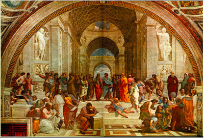
And while citizens had the right to vote on public policy, they did not have the opportunity to vote for those people who would implement the policies decided upon by the citizens’ assembly. Instead, political officers were selected by drawing lots. Although intended to limit the ability of the wealthy to influence voters, this “government by luck of the draw” approach could not be characterized as particularly democratic.
Based on the exclusion of the vast majority of the populous from the decision making process alone, ancient Athens was not representative of the basic principles of modern liberalism. On top of this, Athenians were allowed to keep slaves and the rights of Athenian women were restricted. It is abundantly clear that the democracy of Greece’s Golden Age is a long way from our present understanding of liberal democracy.
Even so, the notion that the citizenry, even if it was a relatively select group, should have the power to direct the course of the state, was a radical shift from the typical rule by a king or an oligarchy. And while the Athenian democracy itself did not survive past 300 BCE, it is fair to say that the ancient Greeks planted seeds of liberalism that would germinate in the 18th century and be further cultivated in Europe and North America.
Glossary Term
direct democracy: a governmental system in which all eligible citizens vote directly upon issues before the government.
oligarchy: a governmental system in which power is concentrated in the hands of a small group of unelected people.
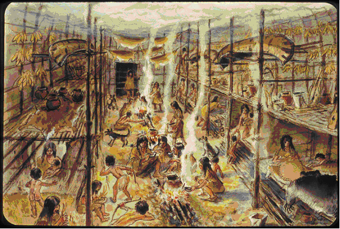
The History of Liberal Traditions in Non-Western Cultures While the roots of the western concept of liberalism may be traced back to ancient Greece, the ideals that underlie liberalism are not exclusive to western societies. There is evidence to suggest that many societies existing in northern India prior to 400 A.D. operated under principles no less “democratic” than those of Athenian democracy. Over the course of history, many other non-western societies have embraced the concepts of group decision making and fundamental rights that are inherent to the western understanding of liberalism. In fact, there is considerable evidence to suggest that one of these societies had a substantial influence in shaping the founding documents of one of the world’s great liberal democracies, the United States.
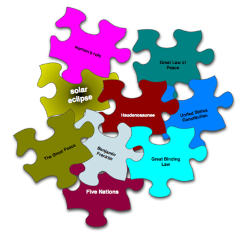
Discover
In the spirit of the Greek word historia, your task now is to “find out” about the non-western society whose approach to liberalism is often seen as having influenced the governmental structure of the United States. Think of this as a puzzle to be solved. You have been provided with a series of puzzle pieces.
Use the advanced search features of a web search engine to search various combinations of the terms on the puzzle pieces, trying different combinations of words. (See the Toolkit for advice and instruction if you don’t understand how to perform an advanced web search.)
Review the information available on line. As you start to ‘put the puzzle pieces together’, the “overall picture” will start be come clear. When you feel you are achieving that ‘clearer picture’, feel free to add your own search terms to the mix in order to broaden and deepen your search.
Once you believe you have a good understanding of the topic under exploration and how it relates to liberalism, open the question sheet below and respond to the questions posed.
God alone knows the future, but only an historian can alter the past. Ambrose Bierce
History is always written wrong, and so always needs to be rewritten. George Santayana
The degree to which the Haudenosaunee approach to liberalism and democracy influenced the founding fathers of the United States is still a matter for some debate. Until recently, most school textbooks and scholarly journals made little, if any, reference to the Haudenosaunee as a major influence on the structure of the U.S. governmental system. Some conservative commentators point to recent efforts to credit the Haudenosaunee influence as “political correctness” and “revisionist history”. They argue that history is being changed in a campaign to put a more multicultural face on America. Liberal academics and commentators generally respond that, due to ethnocentric attitudes, Americans have historically ignored the pivotal role the Haudenosaunee played in the shaping of the governmental system. They would argue that they are not ‘creating a false history’ but instead are ‘setting the record straight’.
You may wish to explore this debate further and consider the arguments that both sides make. Combine “revisionist history” and “political correctness” some of the search terms in your list and see what comes back.
Big idea
Lesson Summary
In this lesson you have discovered that many of the ideals associated with modern liberalism found their origins in ancient societies. The ancient Greek form of democracy, though a far cry from the modern version, seeded in the minds of future champions of liberalism the important notion that the people should ultimately rule the government, not vice-versa. Societies not born of western traditions also implemented social and governmental structures that reflect liberal ideals. In North America, the Haudenosaunee had been living under a system that incorporated aspects of liberalism long before “birth” European liberalism in the 18th century and aspects of that system were clearly borrowed by the founding fathers of the United States.
Clearly, many of foundational ideals of liberalism have a long history. As you will see in the next lesson, these ideals were revived and elaborated on by individuals who were aware of the precedents set in ancient Athens and by the Haudenosaunee.
Watch / Listen
Podcast connection
Use these podcasts before the lesson questions. Listen for details that help answer the related issue question: To what extent should ideology be the foundation of identity?
Big Thinkers of Political Theory Podcast
Podcast companion for Hobbes, Locke, Marx, and the big theoretical disagreements behind liberal and collectivist thought.
What forces and beliefs stimulated the development of classical liberalism? Get Focused Have you ever read a biography of your favourite musical artist or musical group?
Big ideaTo what extent should ideology be the foundation of identity?
Section 2: Origins of Classical Liberalism
Learn / Read
Get Focused
Have you ever read a biography of your favourite musical artist or musical group? If not, go online and seek out a few biographies. (Many online music stores provide biographies of artists.)
What musical artists or groups influenced your favourite singer or band as they were developing their unique sound? If you can, try to listen to some of the music by these older artists. In many cases you’ll find that the influence of classic songs and legendary artists from previous decades is readily apparent in music you listen to today. Most musicians start out trying to emulate their own favourite performers and then, as they develop, they adapt and modify their sound, making it more their own.
Liberalism as we know it today has come about much the same way. From the 1700s on, a wave of new thinking was sweeping parts of Europe. As the liberal thinkers of the day published their ideas books and pamphlets, their ideas began to influence the organization of society, government and the economy. Through the centuries, those ideas were modified and built upon to give us our present understanding of liberalism. But to really understand how we got here, we need to examine the “classical liberalism” from which our modern concept of liberalism evolved.
In this lesson you will explore the question: What forces and beliefs stimulated the development of classical liberalism?
Learn / Read
The Enlightenment and Political Revolution
In previous Social Studies courses, you likely learned about the French Revolution. The French Revolution was a nationalist movement. The French rejected the long held concept of themselves as “subjects of a king” and replaced it with the idea of being “citizens of a nation”.
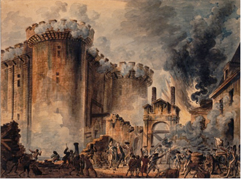
The French Revolution, however, was also a ‘liberal’ movement. It represented a rejection of absolute rule by one individual in favour of rule by a government of the people. It replaced a social and governmental system based on heredity and privilege with one based on equality and rights.
The seeds of the French Revolution, and many later revolutions, were planted during a period called the “Enlightenment” or the “Age of Reason”. Writers and thinkers, or, as they were referred to in France, “philosophes”, began to challenge the challenge the traditional political, social and economic structures that were in place at the time.
Absolute monarchy in France and in many other countries was based upon the concept of the divine right of kings. The divine right of kings is the theory that absolute monarchs held power because God had chosen them to rule
The divine right of kings was supported and promoted by the Catholic Church which was a powerful influence in the lives of the common people. Based on the Church’s teachings then, criticizing the monarch or his or her right to rule could be construed as questioning the judgement of god.
During the Enlightenment, however, many of the philosophes did question traditional ideas, including the existence of god, god’s role in human affairs if he did exist, and the right of the king to rule over his subjects with absolute power. By challenging centuries-old ideas about government and the monarchs’ right to rule, the writers of the Enlightenment laid the groundwork for the overthrow of many of Europe’s monarchies and their eventual replacement by liberal democracies.
Democracies founded on these early ideals of liberalism were still substantially different from most modern concepts of democracy. The notion of what should be considered a “right” and exactly who should be entitled to those rights would continue to develop over the centuries.
Textbook Reading
Read pages 16-18 in Chapter 1 of the Perspectives on Ideology textbook.
And pages 108 to 110 in Chapter 3
What are the problem with democracy identified by Hobbes? What did other theorists suggest might address these problems?
Read page 351 to 352 in Chapter 10 of the Perspectives on Iedology textbook.
What is the problem Mill saw with John Locke's vision of majoirty rule?
Learn / Read
Economic Revolution: Moving from Mercantilism to Capitalism
As well as tackling the rights of kings to rule absolutely, many liberal thinkers began to criticize the dominant economic system of the time, mercantilism.
This system was in effect from approximately the fifteenth century to the eighteenth century. During this time, many of Europe’s monarchs’ sole aim was to make their nation as wealthy as possible, even if it meant exploiting other smaller nations. Under mercantilism, monarchs would grant certain merchants, friends, relatives, or companies a licence to operate their business enterprises and to trade abroad. Granting privileges to certain businesses created monopolies. This limited the availability of goods and drove prices up. Competition was almost non-existent. Monarchs filled their treasuries by selling licences and taxing the merchants and companies that were making large profits through this system.
Mercantilism was criticized by the physiocrats, French economists whose ideas began to have influence in the latter half of the 18th century. Under mercantilism, monarchs accumulated wealth in the form of gold bullion by restricting the flow of money out of the country and taxing goods being imported. The physiocrats advocated a policy of laissez-faire (leave alone) economics.
Learn / Read
Adam Smith
In his 1776 work, The Wealth of Nations, Scottish economist Adam Smith built on the ideas of the physiocrats, arguing that the freedom to own property and to produce, sell, and buy goods without government intervention would ultimately serve to generate national wealth far more effectively that mercantilism.
Smith believed that people instinctively seek what is best for themselves. He thought that this self-interest should be freely expressed in an environment of unlimited competition that is a free market system.
Smith held that the natural interplay between buyers and sellers and worker and employers would ultimately ensure that goods were produced efficiently and economically. Government meddling in the economy would be unnecessary. Competition between consumers for products, between businesses for consumers’ dollars, between workers for jobs, and between employers for skilled workers, would ultimately make the economy self-regulating. Smith referred to this as the “invisible hand”.
As individuals strove to better their own economic situation, the economy of the nation as a whole would also benefit.
“[The business person] is led by an invisible hand to promote an end which was no part of his intention. Nor is it always the worse for the society that it was no part of it. By pursuing his own interest he frequently promotes that of society more effectually than when he really intends to promote it. I have never known much good done by those who affect to trade for the public good. It is an affectation, indeed, not very common among merchants, and very few words need be employed in dissuading them from it.”
—Adam Smith, The Wealth of Nations (1776)
Classical liberals had a far more expansive understanding of the term “minimal government interference” that exists at present. As capitalist ideals gained sway, there was little government regulation or oversight of business or business practices. The free market was far more “free” than it is today.
Video - Adam Smith
Watch this brief summary of "The Essential Adam Smith: The Role of Government:
Journal/Notes
Take a moment to consider the following questions. How involved should the government be in economic affairs? Should government attempt to control prices of basic foods? Should there be a minimum wage? How do workers wages affect the price of the products they produce? Should all products be tested for consumer safety? If so, who should bear the cost of testing?
Refer back to these notes for your upcoming assignment.
Learn / Read
John Stuart Mill
"The only freedom which deserves the name is that of pursuing our own good in our own way, so long as we do not attempt to deprive others of theirs, or impede theor efforts to obtain it ... Mankind are greater gainers by suffering each other to live as seems good to themselves, than by compelling each to live as seems good to the rest."
- John Stuart Mill, On Liberty, 1859
Multimedia - John Stuart Mill
Watch this 2-minute BBC Radio 4 video on Mill's harm principle and freedom of speech.
Other ideas supported by John Stuart Mill include tyranny of the majority:
Journal/Notes/Research
Research other key principles of Mill's political and economic theories. What does he say about government intervention in the economy? Taxation? Universal suffrage?
How is John Stuart Mill different from John Locke and Adam Smith? Which of these theorists make the most sense to you and why? Can you base your opinion on historical or contemporary examples or other forms of evidence?
Refer back to your notes for your upcoming assignment.
Learning Activity - Influential Liberal Philosophers
There were many philosophers writing during and immediately after the Enlightenment who profoundly influenced liberal economic, political, and social ideals.
View the video "Rock Talk" for an introduction to three important liberal philosophers and their contributions.
You will be introduced to the following new terms in the video: self-regulating, tyranny of the majority, social contract, and natural rights.
You have examined philosophers who contributed to classical liberalism and how their work relates to the principles of liberalism. Classical liberalism emphasized the political power of the people, individual liberty and, in particular, limited government intervention in economy. Classical liberal philosophers tended to focus heavily on the “freedom to”, for example, make money. As you will discover in the next section, the notion that people should also have “freedom from” such things as poverty or dangerous working conditions would develop later.
Glossary
capitalism: an economic system based on free markets, private ownership of the means of production, competition, wise consumers, and profit-motivated producers
free market system: an economic system in which individuals are free to own property, produce goods, and buy or sell goods and services with little or no government interference; sometimes also referred to as: capitalism, the market system, free enterprise, private enterprise
harm principle: if what you are doing does not hurt anyone else, then you should be free to do it without govrenment interference.
invisible hand: in economics, the concept that the individual self-interest and competition would regulate the economy.
laissez-faire : a economic theory or system that advocates little or no government interference in the economic affairs of the people.
mercantilism: an economic system that was characterized by efforts to restrict trade between nations, regulate economic activity and accumulate gold bullion in the national treasury.
natural rights: universal and inalienable rights held by all human beings (eg. in John Locke's philosophy).
separation of powers: power is divided between branches of government (eg. Cabinet; House of Commons; Senate; Judiciary have separate responsibilities).
social contract: an agreement between the sovereign (ruler or government) and citizens about how they should be governed.
tyranny of the majority: when the majority makes decisions based on their own interests with no regard for the rights of the minority.
Watch / Listen
Podcast connection
Use these podcasts before the lesson questions. Listen for details that help answer the related issue question: To what extent should ideology be the foundation of identity?
Big Thinkers of Political Theory Podcast
Podcast companion for Hobbes, Locke, Marx, and the big theoretical disagreements behind liberal and collectivist thought.
Section 2 Summary In this section you have developed an understanding of the people, practices and events that spurred the development of early forms liberalism.
Big ideaTo what extent should ideology be the foundation of identity?
Section 2: Origins of Classical Liberalism
Big idea
Section 2 Summary
In this section you have developed an understanding of the people, practices and events that spurred the development of early forms liberalism. This is important foundational knowledge that will be required for you to fully comprehend the sections that follow and allow you to achieve success on the diploma exam. As you continue your study of liberalism, be prepared to provide examples that illustrate how liberal ideals were incorporated into many early societies and the influence these ideals had on the development of the modern understanding of liberalism. Ensure that you can explain how the Enlightenment and the French Revolution kindled the fires of liberalism in Europe. Also important is the ability to discuss Adam Smith, John Locke, Baron Charles de Montesquieu and John Stuart Mill, explaining how the ideas of these writers contributed to the development of liberalism. If you are still having difficulty with some of the concepts in this section, contact your teacher for assistance and clarification.
Your understanding of the early history of liberalism will provide one more piece of the puzzle as you seek to answer the key inquiry question for this unit: How did liberalism originate?
Turn it into evidence
Build your evidence note
Save one useful idea, source detail, or question from this lesson so it can support later source work or position writing.
Why did liberalism change? Section 3 Introduction In this unit’s previous sections you were familiarized with the basic ideals of liberalism and gained some insight into how liberalism developed.
Big ideaTo what extent should ideology be the foundation of identity?
Section 3: Classical Liberalism in Practice
Learn / Read
Section 3 Introduction
In this unit’s previous sections you were familiarized with the basic ideals of liberalism and gained some insight into how liberalism developed.
As the theories generated by classical liberal philosophers, like Hobbes, Locke, Smith, Mill and others, began to be put into practice, there were both positive and negative impacts. The negative consequences of implementing classical liberal ideals caused many people to re-evaluate classical liberalism. Societies that had experienced the worst aspects of classical liberal economic ideals began to make modifications to liberalism, adapting it as necessary to meet the challenges created by unrestricted laissez-faire capitalism.
In this section you will be answering the question: Why did classical liberalism change?
In This Section
In this section there are two lessons.
In each lesson you will have opportunities to
• develop an understanding of problems that can arise when ideological theories are put into practice
• explore issues and concerns that motivate individuals and groups to become politically active
Outcomes
In this section you will develop your understanding of
• how citizens and citizenship are impacted by the promotion of ideological principles
• impacts of classical liberal thought on 19th century society
As well you will continue to develop the following skills and processes:
• engage in active inquiry and critical and creative thinking
• apply historical skills to bring meaning to issues and events
• use and manage information and communication technologies critically
• conduct research ethically using varied methods and sources; organize, interpret and present your findings; and defend your opinions
• communicate ideas and information in an informed, organized and persuasive manner.
Section Glossary
capital: money, property or other assets that can be used by and individual or group to generate more wealth
class structure (class system): the division of society based on factors such as wealth, social standing, education and political power
classical conservatism:
an ideology that rejected the ideals of classical liberalism, advocating instead a return tomore traditional forms of government, such as organizing society in a hierarchical fashion; government chosen by a limited electorate; protect the legacy of the past; maintain stability
communism:
an economic system in which property is vested in the community and workers and each member works for the common benefit according to his or her capacity and receiving according to his or her needs. Not all communists are Marxists.
humanitarian: a person, group or act that attempts to improve the living conditions of other people
Marxism: Two German philosophers, Karl Marx and Freidrich Engels, supported a radical form of socialism, a variant of communism and different from other socialist ideologies. Marxism is an ideology that predicts a worker revolution will overthrow the capitalist system and, through a "dictatorship of the proletariat" (workers), create a collectivist society that controls the economy and, eventually, there would be no need for the state or central government. However, that final stage of communism, according to Marx, must first be preceded by a socialist dictatorship in which the state (a dictatorship) controls the economy until such time there is no more threat of counter-revolution and the capitalist class structure has been abolished. With no more class struggle, there is no more need for the state and it "withers away" (Friedrich Engels). See also communism, scientific socialism, collectivist anarchism (like liberalism, marxism/communism has sub-categories with different views on the continued existence of the state and its role in the economy and society).
nouveau riche: people who have become rich recently, as opposed to those who have inherited family wealth over a period of generations; literally, “the new rich”
socialism: any of a variety of ideologies that advocate significant levels of state control of the economy with the intent of providing for the needs of all citizens; the belief that resources should be controlled by the public for the benefit of everyone in society and not by private interests for the benefit of private owners and investors
utopian: perfect; usually used in reference to an imaginary world where the typical problems of human society have been overcome
Turn it into evidence
Build your evidence note
Save one useful idea, source detail, or question from this lesson so it can support later source work or position writing.
Life Under Classical Liberalism Get Focused Imagine you are married and have a family to support.
Big ideaTo what extent should ideology be the foundation of identity?
Section 3: Classical Liberalism in Practice
Learn / Read
Get Focused
Imagine you are married and have a family to support. You arrive at work one day and your employer asks you to make adjustments to a large machine while it is running. You immediately recognize that to do so would jeopardize your safety. You could lose a limb, or even your life. You suggest to your employer that the machine be turned off before the adjustments are made, but he insists that to do so will significantly slow down production. You express your concerns about your safety.
“I’m free to run my factory how I like....” he responds, “...and you’re free to quit and find a ‘safer’ job if you want.” I have people lining up outside to try and get work here. I’m sure one of them won’t mind crawling in there to make the necessary adjustments.”
You realize he is right. He does have the right to run his factory how he likes. And you are free to go find safer work. But both you and he know there are few jobs to be had in town. You see unemployed people lined up outside the factory every day as you walk through the gates. How much freedom do you and other workers really have, you wonder, other than the freedom to go hungry if you won’t do exactly what your boss wants?
Adam Smith’s approach to liberal economics took hold at the cusp of a historical period called the Industrial Revolution. Technological innovations combined with tremendous economic freedom allowed countries like Great Britain and the United States to become economic superpowers. Many business owners became wealthy beyond imagination. But for many who toiled away in the factories of Britain and the U.S., the benefit of the free market was harder to realize.
To understand the difference between classical liberalism and the modern liberalism, you’ll need to be familiar with some of the effects of the unbridled capitalism that was spawned by the classical liberal ideas of Smith, Locke, and others.
In this lesson you will explore the question: What were the impacts of classical liberalism?
Learn / Read
Explore
Reading and Notes
Read pp.119-124 in Chapter 3 of Perspectives on Ideologyand make a set of Cornell notes or a concept map based on the information presented.
The purpose of taking notes is twofold. Firstly, as previously noted, you are more likely to understand and remember information if you are required to process and “repackage” it. Secondly, a well-constructed set of notes or a concept map will allow you to study efficiently for exams by avoiding the need to re-read the assigned sections of the text.
Make sure you save your completed notes in a folder, portfolio or journal. Your teacher may request that you submit a copy of your notes to verify completion and to provide feedback if something went wrong in an assignment.
Review the self-assessment rubric below prior to making your notes to help you determine the depth and detail your notes should go into. These notes will aid in your review processes for the module, unit assignment other assessments.
Self-Assessment Rubric for Quality of Notes
Excellent
Proficient
Marginal
Substandard
Insufficient
Quality of Study Notes
My notes indicate that have I given careful consideration to the reading. I have identified all key concepts and clarified those concepts using judiciously chosen details and examples. Where possible and appropriate, I have “repackaged” the information from the reading, presenting it using my own words or graphical representations.
My notes would serve as a clear, comprehensive but succinct study resource.
My notes indicate that have I given purposeful consideration to the reading. I have identified most of the key concepts and clarified those concepts using details and examples. I have generally “repackaged” the information from the reading presenting it using my own words or graphical representations although I may have copied directly from the reading in a few instances.
My notes would serve as a solid, functional study resource.
My notes indicate that I have given casual consideration to the reading. I have identified some key concepts. I may have provided extraneous detail or insufficient detail. I have copied much of the information directly from the reading, rather than “repackaging” it using my own words or graphical representations.
My notes would serve as a rudimentary and/or unwieldy study resource.
My notes indicate that I have given minimal consideration to the reading. There is little evidence that I have identified the key concepts in the reading. My notes may be filled with extraneous information, largely copied word for word from the reading or may be so scant that they suggest I did not actively evaluate the information presented.
My notes would serve as an inadequate or impractical study resource.
My response is so scant or of such poor quality that assessment is not possible.
Discover
Take some time to further familiarize yourself with the issues associated with the classical liberal approach to economics. You will be using the information you find to help serve as a basis for the activity you will be completing for this lesson.
Use the graphic below to assist you in a search of the internet. For each problem, enter the indicated combinations of terms into the search box then review the hits returned by your chosen search engine.
Read over a few pages that appear to provide a general summary of information. For the purposes of this lesson, you do not need to read lengthy and detailed documents although you are very welcome to do so if you have the time and inclination.
Be sure to apply each of search terms to an “image search” as well. The pictures from the period speak volumes about some of the problems inherent in unrestricted economic freedom.
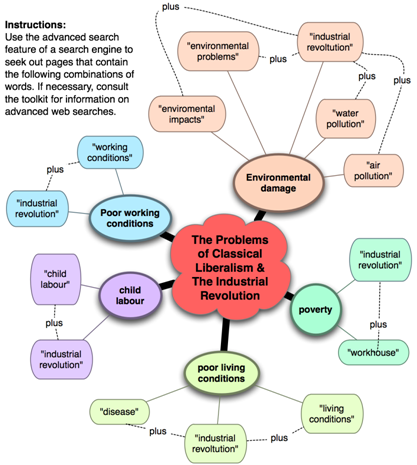
Learn / Read
The Industrial Revolution from the Classical Liberal Perspective
Many would argue that, despite the negative impacts associated with classical liberal economics, Adam Smith was ultimately proven correct. In Britain, where the Industrial Revolution got its start, the economic freedom afforded entrepreneurs owners and other business had clearly benefited the nation as a whole. By the dawn of the 20th century Britain was one of the wealthiest nations in the world, an economic and military superpower. The standard of living of its citizenry had improved significantly over the previous 150 years.
Journal/Notes
What is a reasonable price for economic progress? As the developing world undergoes its own industrial revolution in the present, issues of exploitation of the poor, use of child labour and environmental degradation are no less relevant than they were in the 19th century. What do you think industrial development? Does the ultimate goal of a higher standard of living for an entire society justify exploiting particular groups within society or damaging the environment?
Going Beyond
How young is too young to work? Use the internet to research minimum age requirements to work in your province. Find out how many hours youth of various ages are allowed to work. How does this compare child labour during the industrial revolution? What might be some of the advantages and disadvantages to allowing youth to take on employment?
Big idea
Lesson Summary
The implementation of classical liberal philosophy during the 18th and 19th century in Europe and America had a profound effect on the world. The ideas put forth by Adam Smith, John Locke and others provided support for the unrestricted capitalism the Industrial Revolution. The free market system of the period fostered technological change and generated great wealth and political power for industrialists and their nations, but it was often at high cost for workers and the environment. Many would come to see that inequities in wealth and political power created by the adoption of classical liberal ideals would have to be addressed.
Watch / Listen
Podcast connection
Use this podcast before the lesson questions. Listen for details that help answer the related issue question: To what extent should ideology be the foundation of identity?
Origins and Rise of Liberalism Podcast
Podcast companion for the historical development of classical liberalism and the shift toward individual rights and market freedom.
Responses to Classical Liberalism Get Focused The economic freedom provided under classical liberalism allowed individuals and nations to amass great wealth and helped drive improvements in technology and production.
Big ideaTo what extent should ideology be the foundation of identity?
Section 3: Classical Liberalism in Practice
Learn / Read
Get Focused
The economic freedom provided under classical liberalism allowed individuals and nations to amass great wealth and helped drive improvements in technology and production. It also resulted, however, in a concentration of political power in the hands of the wealthy and in the exploitation of those in society who did not have the means to take advantage of this new economic freedom.
Put yourself in the place of a worker in a factory in Great Britain during the Industrial Revolution. What economic, political and social changes would you like to see happen to improve your life? How would you go about getting those changes made? How do you think classical liberals would respond to efforts to change the economic, political and social structures that had evolved out of classical liberal thought?
In order to fully understand how classical liberalism began to change and evolve into modern liberalism, it is important to have a sense of the variety of social movements and new ideologies that arose in response to classical liberalism.
In this lesson you will explore the question: What ideologies developed in response to classical liberalism?
Learn / Read
Explore
Read
Read Ch. 4, pp. 128-141 in Perspectives on Ideology
Learning Activity
Responses to Classical Liberalism Organizer (click here to open and save a copy of info below)
1. Read pages 128-141 in your Perspectives on Ideology textbook.
2. Based on the information you read in your textbook, imagine the following scenario:
You are a worker in a textile mill in an industrial town 19th century Britain. Your co-workers have heard rumours of protest movements gaining momentum in other parts of Britain. Frustrated by the working conditions that they must endure, they, are interested in joining one of these protest movements to help bring about changes to their living and working conditions. As someone who can read and is knowledgeable about the world beyond the mill, your co-workers approach you with questions.
“There are people out there fighting to change things. Which group should we join? Which of the groups do you think best serve the needs of all the people in society?”
3. Your task is to advise your co-workers. Review the ideals, goals and policies promoted by the movements and ideologies listed in the Evaluating Responses Chart below.
List the Pros and Cons of each movement in terms of serving the needs of Britain’s population. Then, rank the movements from 1 to 5, with 1 being your first choice for the support of your co-workers and 5 being the least favourable choice.
In a sentence or two, explain why you ranked each movement or ideology where you did. What was it about each movement that triggered you to rank it the way that you did?
Compare your rankings and explanations to those of another classmate in the Student Activities discussion forum (or in person) and discuss any differences between the way you ranked things. Do they agree with your rankings? Do they agree with your reasons? Why or why not?
Evaluating Responses Chart
Ideologies
Rank (1-5)
Explanation of why you ranked each movement as you did
Luddites
Chartists
Utopian Socialists
Marxism
Classical conservatism
Big idea
Lesson Summary
In response to classical liberalism, a number of social and ideological movements evolved. Some rejected the changes brought about under classical liberalism, seeking a return to previous social, economic and political traditions. Some worked to modify the ideals of classical liberalism, endeavouring to soften it’s stark interpretation of individualism and free market economics. Still others rejected the principles of individualism and the free market altogether, advocating collectivism instead.
The adoption of classical liberal ideals by nations during the industrial revolution is often credited with ultimately improving the standard of living in these nations. The role of the other movements and ideologies that developed in response to classical liberalism cannot be ignored, however. By challenging the economic and political inequities associated with classical liberalism, its detractors stimulated the further evolution of liberalism. Other weaknesses of classical liberal ideology would soon be made apparent, leading to changes that would see it develop into the modern liberalism of the present. These changes will be explored in the next unit.
Going Beyond
Podcasts are increasingly being used as a mode of delivery by teachers and educational institutions around the world. As a result, you have easy access to additional instruction provided, in many cases by experts, in their field. The University of California Berkeley Campus has made a variety of lectures available to the general public in podcast format including one that takes and look at weakness of classical liberalism and the ideas of Robert Owen, Charles Fourier and Karl Marx. It is well worth a listen.
In this section you have developed an understanding of the social and economic impacts of putting classical liberal theory into practice.
The implementation of classical liberal ideals resulted in the extension of political power to the people and tremendous economic freedom. Not all people, however, shared equally in political power and the classical liberal theories regarding economics and individualism were frequently used to justify the tremendous inequities that arose during the Industrial Revolution.
By integrating what you have learned in this section with the knowledge you have derived from previous sections in this module, you should be able to respond confidently to questions pertaining to the origins of liberalism.
Big idea
Unit Summary
Present day liberalism represents the result of centuries of human thought, organization and experimentation. In western society, liberalism arose as a response to mercantilism and the injustices and abuse of power that took place under the rule of absolute monarchs. The notion of a free society in which the seat of political power lay in the hands of the people was a powerful idea.
In practice, however, liberalism in its classic form was not without problems. The economic freedom proposed by the likes of Adam Smith and the physiocrats provided more immediate benefit to those who already had wealth. Workers and the poor, on the other hand, were often at the mercy of capitalists who viewed them as little more than another resource in the production process. Political power as well, was generally concentrated in the hands of wealthy men. Property ownership requirements shut the poor out of the political process and women, regardless of economic status, were not allowed to vote.
Over the course of the Industrial Revolution, people began to challenge the ideals of classical liberalism. Some or the wealth and educated began to question the morality of using child labour and forcing people to toil in inhumane working conditions within factories and mines. Workers themselves began to organize, seeking more political power. By the end of the 19th century, the working classes were beginning to achieve some political and economic gains. New ideologies were developing to challenge classical liberalism and liberalism itself was beginning to evolve. As you will see in the next unit, this evolution was to continue in the 20th century.
This unit has provided you with an insight into the accomplishments and problems of classical liberalism. There are still people today who maintain that classical liberals had it right and that liberalism has drifted too far from its roots. As you continue through the course and increase your understanding of liberalism, you will eventually come to your own determination regarding the extent to which classical liberal beliefs should form part of your ideology.
Study Help
Before proceeding to the Unit Test and written assignment, take advantage of these learning resources and check your understanding of the concepts studied in the unit.
Study Notes:
Click here to open a copy of study notes for this unit. You will need to modify them to suit your needs, but are a good starting point in reviewing the material.
Try it
Practice questions
Complete the 1 lesson question below while the ideas from this lesson are fresh. Your responses save with the rest of your course notes.
1
What, according to Rousseau, are the reasons that:“…everywhere [people] are in chains.”?
Saved locally
Turn it into evidence
Build your evidence note
Save one useful idea, source detail, or question from this lesson so it can support later source work or position writing.
To what extent should ideology be the foundation of identity?
Diploma issue inquiry
Start with a position
Use this page to record your first thinking before you gather evidence across the unit lessons.
Turn the issue into a diploma investigation
Before taking a side, define what the issue is asking and what kind of evidence would make an answer defensible.
1. Unpack the taskTurn the related issue into a yes, no, or to-what-extent question before choosing evidence.2. Define the termsClarify the key liberal principle, ideology, group, event, or policy that the question depends on.3. Name the tensionShow what is in conflict: individual freedom, collective interest, equality, security, prosperity, identity, or citizenship.4. Plan the proofDecide what kind of example would help: source detail, historical case, current issue, law, policy, or thinker.
Map the possible positions
A diploma answer is stronger when students can see more than one defensible side before deciding where they stand.
Set up an evidence hunt
Use the lessons, source analysis practice, and evidence bank to find proof that can survive a counterargument.
Inquiry and evidence supports
Use these course documents while unpacking the issue, reading for evidence, and deciding what counts as a strong reason.
What this support teaches
Inquiry begins by separating facts, opinions, premises, conclusions, and assumptions.
A useful issue question points toward evidence that can confirm, complicate, or challenge a first reaction.
For this issue, evidence should help explain how ideology, worldview, beliefs, values, language, culture, or collective identity can shape identity.
4 support documents. Choose one, read the relevant page, then apply one move below.
Student support
Fact vs Opinion and Journalism
Student support resource from the course package.
Use it here: Find one move that improves the inquiry question you are building on this page.
Use one support document to sharpen the question you are asking before you move into sources or position writing.
Saved locally
Source response practice
Source Analysis
Use this routine for political cartoons, textbook excerpts, charts, images, quotations, and case studies from the lessons.
Diploma source response
Source Response Routine
To what extent should ideology be the foundation of identity?
Read the source in five moves
Strong source responses do more than describe what is shown. Move from observation to interpretation, then connect that interpretation to the related issue.
1. NoticeName what is literally shown, stated, emphasized, or repeated before interpreting it.2. DecodeTurn the source into a message: what idea, warning, criticism, or defence is being pushed?3. ConnectLink the message to a liberal principle, collective interest, or related-issue tension.4. JudgeCheck limits: bias, missing context, point of view, purpose, or what the source leaves out.5. RespondWrite a clear interpretation, prove it with one detail, and connect it back to the issue question.
Practice with real source material
Choose one course image or quotation in the viewer. Read the message first, then prove it with a visible detail or exact phrase.
Practice Source A | Artwork
Norman Rockwell and Identity
What does this source suggest about how identity is shaped by shared values, personal experience, or ideology?
Course source image connected to identity, values, and ideology.
Practice Source B | Photograph
Young Liberals and Political Identity
What does this source suggest about how political movements can shape identity, belonging, and values?
Course source image connected to political affiliation and ideological identity.
Practice Source C | Political Cartoon
Partisanship and Ideological Labels
What criticism or warning does this source make about using ideology as the foundation of identity?
Course source image connected to political ideology, labels, and identity.
Practice Source D | Photograph
Longhouse and Collective Identity
What does this source suggest about the role of community, history, and collective beliefs in shaping identity?
Course source image connected to collective identity, culture, and worldview.
Practice Source E | Photograph
Tradition and Modern Urban Life
What does this source suggest about how cultural traditions and modern life can both shape identity?
Source-analysis practice image from the course image-reading materials.
Practice Source F | Photograph
Perspective and Social Difference
How could this source be interpreted as a message about perspective, experience, and identity?
Source-analysis practice image from the course image-reading materials.
Now analyze your course source
Answer these in order so your final response has message, proof, connection, and judgment.
1.
What is the source's main message?
2.
Which ideological perspective or principle is most visible?
3.
What detail from the source supports your interpretation?
4.
How does this source connect to Ideology and Identity?
5.
What limitation, bias, or context should be considered before using this source as evidence?
Build a diploma-style response
Use the sentence starts to move from interpretation to evidence to related-issue connection.
Shape the final paragraph
A strong diploma source response usually works as one clear paragraph: interpret the message, prove it with source evidence, connect it to the issue, then add judgment.
1. Opening interpretationState the source's message in your own words. Do not start by only listing what you see.2. Proof from the sourceUse one exact phrase, image detail, statistic, label, or visual choice and explain how it proves your interpretation.3. Course connectionLink the message to a liberal principle, tension, or case from Ideology and Identity.4. JudgmentAdd a limit, bias, missing context, or consequence so the response sounds analytical instead of descriptive.
Answer pattern
Interpret: The source suggests that...
Prove: This is shown through...
Connect: This connects to liberalism because...
Judge: However, the source may be limited by...
Source analysis supports
Use these course documents when you need hints, templates, or a fuller guide while writing a source response.
What this support teaches
A source response starts with the message, not a description of everything visible.
The proof must come from one precise source detail, word choice, symbol, statistic, or image choice.
The final connection should explain what the source reveals about liberalism, citizenship, or limits on individual freedom.
5 support documents. Choose one, read the relevant page, then apply one move below.
Student support
Analyzing Images and Information
Student support resource from the course package.
Use it here: Find one move that improves the source response you are building on this page.
Open one support document, take one writing move from it, and use that move to improve the source response you are building above.
Saved locally
Position paper planning
Position Builder
Move from evidence to a defensible position. Keep the claim specific, arguable, and connected to the related issue.
Diploma writing practice
Build A Position Paper Path
To what extent should ideology be the foundation of identity?
Build the position in five moves
Use this routine to move from a simple opinion to a diploma-style argument with qualification, proof, and judgment.
1. Answer the extentSay how far you agree, not just whether you agree.2. Qualify the claimUse conditions such as when, if, unless, because, or however to make the position precise.3. Select proofChoose examples that show a pattern, not three disconnected facts.4. Handle the other sideAcknowledge a real counterargument and explain why your position still holds.5. Judge significanceEnd with why the issue matters for liberalism, ideology, citizenship, or society.
Choose proof that can carry paragraphs
Each body paragraph needs a point, a specific example, and an explanation of how that example proves the position.
Test the position against another view
Diploma writing rewards judgment. A strong position shows that the writer understands the best opposing argument.
Plan the five-paragraph position paper
Use the same structure as the Position Paper How-To support: thesis, three body paragraphs with topic-evidence-commentary-closing moves, then a conclusion.
Position paper supports
Use these course documents while building a thesis, selecting proof, checking structure, and comparing against student samples.
What this support teaches
A position paper answers the extent of agreement before it starts listing examples.
A strong thesis is qualified: it names the condition, limit, or priority that makes the position defensible.
Each paragraph needs a reason, specific proof, explanation, and a return to the issue question.
9 support documents. Choose one, read the relevant page, then apply one move below.
Student support
Economic Position Paper How-To
Student support resource from the course package.
Use it here: Find one move that improves the position paper plan you are building on this page.
Use the checklist, outline, sample, or thesis support to make the position paper plan more specific.
Saved locally
Evidence notebook
Evidence Bank
Collect moments you may reuse in source responses, position papers, discussions, and exam-style writing.
Lesson Evidence Notes
Collected From Lessons
Notes saved at the end of lessons appear here automatically.
No lesson evidence notes yet. Add one from any lesson and it will appear here.
Saved proof notes
Use the notebook below to save reusable proof notes here.
Running Evidence Notebook
Save Proof As You Move
Record the lesson or source, the evidence, and the reason it matters.
Saved locally
Course documents
Library
Open textbook chapters and course handouts in one focused reader while you build evidence for To what extent should ideology be the foundation of identity?.
Use this page to review the issue vocabulary, people, concepts, and thinking moves, then check your recall against the course guide.
Use the study guide in three passes
Turn the guide into retrieval practice before you reread every page. Diploma prep works best when you can explain the idea without looking first.
1. Mark what is unfamiliarSkim the guide once and list terms, examples, people, or policies you could not explain yet.
2. Explain the issue out loudUse the guide to answer the related issue in your own words before copying any notes.
3. Pull proof into writingChoose details that could support source analysis, position writing, or a counterargument.
What to review for Ideology and Identity
Check each item when you can explain it without copying the guide.
Check yourself before opening the guide
Answer from memory first, then use the unit answers below to correct or strengthen your response.
Vocabulary check
Pick a term, explain it from memory, then reveal the unit answer to compare.
Ideology
Explain how ideology can become part of identity.
Reveal unit answer
Ideology is a set of beliefs and values about society, human nature, government, rights, and responsibility. In Related Issue 1, ideology matters because it can become part of how people understand themselves and the groups they belong to.
For diploma writing, avoid saying ideology is the only foundation of identity. A stronger judgment explains that ideology can shape identity through beliefs, values, and political commitments, but identity can also be shaped by culture, language, religion, gender, history, family, and personal experience.
Identity
Explain identity as more than a personal label.
Reveal unit answer
Identity is the way people understand who they are as individuals and as members of communities. The unit connects identity to beliefs, values, worldview, culture, language, traditions, and the collectives people belong to.
In a position or source response, identity becomes useful when you show what factor is doing the shaping. A source might emphasize individual choice, collective belonging, inherited culture, political values, or pressure to conform.
Worldview
Explain how worldview connects to ideology.
Reveal unit answer
Worldview is the lens through which people interpret the world. It is shaped by experiences, culture, values, spiritual beliefs, education, environment, and relationships. Ideology can grow from worldview because people often turn their beliefs about life into beliefs about society and government.
For the diploma, worldview helps explain why different people can look at the same issue and reach different conclusions. It is especially useful when comparing sources that reveal contrasting assumptions about freedom, equality, community, or responsibility.
Individualism
Explain how individualism can shape identity.
Reveal unit answer
Individualism emphasizes personal autonomy, self-reliance, individual rights, private property, competition, and the freedom to make choices. It can shape identity when people define themselves through personal goals, independence, achievement, or conscience.
The issue question asks for extent. Individualism can be an important foundation of identity, especially in liberal societies, but a strong answer also recognizes that people are not only isolated individuals; they are shaped by relationships, cultures, and communities.
Collectivism
Explain how collectivism can shape identity.
Reveal unit answer
Collectivism emphasizes group membership, shared responsibility, common good, cooperation, and collective identity. It can shape identity when people understand themselves through family, culture, class, nation, religion, or community obligations.
Use collectivism carefully in writing: it can give people belonging and purpose, but it can also pressure individuals to conform. The strongest answers judge when collective identity strengthens a person and when it limits individual freedom.
Liberalism
Explain why liberalism matters in an identity issue.
Reveal unit answer
Liberalism is important because it places value on individual rights, freedoms, self-interest, private property, competition, and limited government. These values can become part of a person's identity, especially in societies that encourage individual choice and personal responsibility.
In Related Issue 1, liberalism should be treated as one possible foundation of identity, not as the whole answer. The diploma move is to judge how much liberal ideology should shape identity compared with culture, language, collective belonging, and personal experience.
Historical events and concepts
Pick an example, explain what it shows, then reveal the unit answer to compare.
John Locke and natural rights
Explain why Locke is useful evidence for ideology and identity.
Reveal unit answer
John Locke is useful because his ideas about natural rights, consent of the governed, and limits on government helped shape liberal ideology. Those ideas connect identity to the belief that individuals possess rights before the state grants them.
For writing, Locke can support a position that ideology can shape identity by giving people a language for freedom, equality under law, and political legitimacy. He can also be used to show that liberal identity is historically constructed, not automatic or universal.
Adam Smith and economic identity
Explain how Smith connects self-interest to liberal identity.
Reveal unit answer
Adam Smith is useful for explaining economic liberalism. His ideas about self-interest, competition, and markets help show how people in liberal societies can come to see themselves as independent economic actors.
In a diploma response, Smith can support discussion of individualism, private property, and competition. A stronger answer will also qualify the point by asking whether economic identity should outweigh social responsibility, equality, or collective wellbeing.
Haudenosaunee Confederacy
Explain what this example shows about collective identity.
Reveal unit answer
The Haudenosaunee Confederacy is useful because it shows identity shaped by community, governance, tradition, and shared responsibility. It complicates the idea that identity must be based mainly on individualism or modern liberal ideology.
For the diploma, this example can support a balanced position: ideology can shape identity, but collective worldviews, culture, and long-standing political traditions can also be foundations of who people are.
French Revolution
Explain how revolution can connect ideology and identity.
Reveal unit answer
The French Revolution is useful because ideas about liberty, equality, citizenship, and popular sovereignty became part of a new political identity. People were not only changing government; they were changing how they understood membership in society.
Use this example to show that ideology can reshape identity during periods of change. It can also serve as a limit: ideological movements can inspire rights and participation, but they can also create pressure, conflict, and exclusion.
Language and culture
Explain why language and culture complicate the issue question.
Reveal unit answer
Language and culture matter because identity is often formed through stories, traditions, relationships, place, and inherited ways of seeing the world. These are not always the same as formal political ideology.
This is useful in writing because it prevents a one-sided answer. A defensible position might argue that ideology should inform identity, but it should not erase cultural, linguistic, spiritual, or community foundations of identity.
Main ideas
Choose a main idea from the guide and connect it to diploma writing.
Identity has many foundations
Main idea
Reveal unit answer
Identity can be shaped by ideology, but also by language, culture, family, religion, gender, history, place, and lived experience. The issue is asking students to judge how important ideology should be compared with those other influences.
For diploma writing, the strongest answer usually avoids an absolute yes or no. It explains when ideology is a useful foundation for identity and when it becomes too narrow, too political, or too disconnected from lived experience.
Ideology organizes beliefs and values
Main idea
Reveal unit answer
Ideology gives people a structure for their beliefs. It can help people decide what they value, what they think government should do, and how they understand freedom, equality, community, and responsibility.
This is useful in a position paper because ideology can explain patterns in identity. Rather than listing random traits, students can show how values connect to a larger way of thinking about society.
Identity balances individual and collective influences
Main idea
Reveal unit answer
Related Issue 1 asks students to think about the tension between individual choice and collective belonging. Liberalism often emphasizes individual identity, while many worldviews and communities emphasize shared identity.
A strong diploma answer judges the balance. It might argue that identity should include individual freedom and personal conscience, but should also respect the communities, cultures, and relationships that give people belonging.
Sources reveal assumptions about identity
Main idea
Reveal unit answer
Source analysis for this issue often asks what the source assumes about how identity is formed. Images, quotations, or cartoons may emphasize personal choice, cultural membership, political labels, shared values, or social pressure.
The diploma move is to identify the source's message and then connect it to the related issue: does the source suggest ideology should be central to identity, only one influence, or a risky foundation?
Course resources
Resources
Textbook chapters, course files, and source links connected to Ideology and Identity.